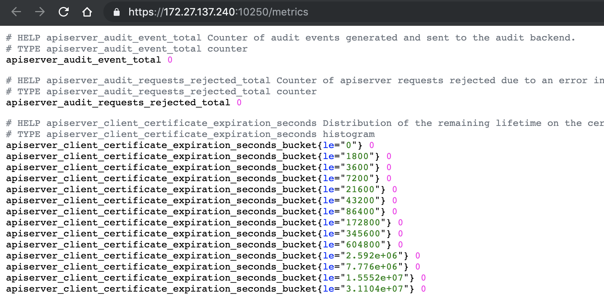
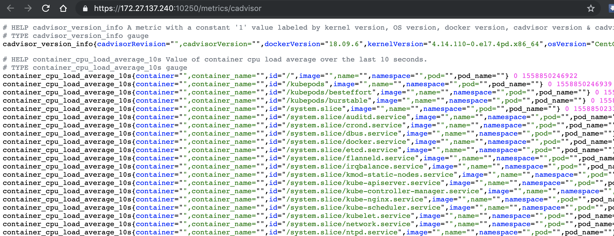

<!DOCTYPE HTML>
<html lang="zh-cn" >
    <head>
        <meta charset="UTF-8">
        <meta content="text/html; charset=utf-8" http-equiv="Content-Type">
        <title>07-2.kubelet · 和我一步步部署kubernetes集群</title>
        <meta http-equiv="X-UA-Compatible" content="IE=edge" />
        <meta name="description" content="">
        <meta name="generator" content="GitBook 3.2.3">
        
        
        
    
    <link rel="stylesheet" href="gitbook/style.css">

    
            
                
                <link rel="stylesheet" href="gitbook/gitbook-plugin-expandable-chapters/expandable-chapters.css">
                
            
                
                <link rel="stylesheet" href="gitbook/gitbook-plugin-anchors/plugin.css">
                
            
                
                <link rel="stylesheet" href="gitbook/gitbook-plugin-disqus/plugin.css">
                
            
                
                <link rel="stylesheet" href="gitbook/gitbook-plugin-prism/prism.css">
                
            
                
                <link rel="stylesheet" href="gitbook/gitbook-plugin-search-plus/search.css">
                
            
                
                <link rel="stylesheet" href="gitbook/gitbook-plugin-splitter/splitter.css">
                
            
                
                <link rel="stylesheet" href="gitbook/gitbook-plugin-page-toc-button/plugin.css">
                
            
                
                <link rel="stylesheet" href="gitbook/gitbook-plugin-image-captions/image-captions.css">
                
            
                
                <link rel="stylesheet" href="gitbook/gitbook-plugin-page-footer-ex/style/plugin.css">
                
            
                
                <link rel="stylesheet" href="gitbook/gitbook-plugin-tags/plugin.css">
                
            
                
                <link rel="stylesheet" href="gitbook/gitbook-plugin-multipart/multipart.css">
                
            
                
                <link rel="stylesheet" href="gitbook/gitbook-plugin-fontsettings/website.css">
                
            
        

    

    
        
    
        
    
        
    
        
    
        
    
        
    

        
    
    
    <meta name="HandheldFriendly" content="true"/>
    <meta name="viewport" content="width=device-width, initial-scale=1, user-scalable=no">
    <meta name="apple-mobile-web-app-capable" content="yes">
    <meta name="apple-mobile-web-app-status-bar-style" content="black">
    <link rel="apple-touch-icon-precomposed" sizes="152x152" href="gitbook/images/apple-touch-icon-precomposed-152.png">
    <link rel="shortcut icon" href="gitbook/images/favicon.ico" type="image/x-icon">

    
    <link rel="next" href="07-3.kube-proxy.html" />
    
    
    <link rel="prev" href="07-1.docker.html" />
    

    </head>
    <body>
        
<div class="book">
    <div class="book-summary">
        
            
<div id="book-search-input" role="search">
    <input type="text" placeholder="輸入並搜尋" />
</div>

            
                <nav role="navigation">
                


<ul class="summary">
    
    

    

    
        
        <li class="header">和我一步步部署 kubernetes 集群</li>
        
        
    
        <li class="chapter " data-level="1.1" data-path="./">
            
                <a href="./">
            
                    
                    Introduction
            
                </a>
            

            
        </li>
    
        <li class="chapter " data-level="1.2" data-path="00.组件版本和配置策略.html">
            
                <a href="00.组件版本和配置策略.html">
            
                    
                    00.组件版本和配置策略
            
                </a>
            

            
        </li>
    
        <li class="chapter " data-level="1.3" data-path="01.系统初始化和全局变量.html">
            
                <a href="01.系统初始化和全局变量.html">
            
                    
                    01.系统初始化和全局变量
            
                </a>
            

            
        </li>
    
        <li class="chapter " data-level="1.4" data-path="02.创建CA证书和秘钥.html">
            
                <a href="02.创建CA证书和秘钥.html">
            
                    
                    02.创建CA证书和秘钥
            
                </a>
            

            
        </li>
    
        <li class="chapter " data-level="1.5" data-path="03.部署kubectl命令行工具.html">
            
                <a href="03.部署kubectl命令行工具.html">
            
                    
                    03.部署kubectl命令行工具
            
                </a>
            

            
        </li>
    
        <li class="chapter " data-level="1.6" data-path="04.部署etcd集群.html">
            
                <a href="04.部署etcd集群.html">
            
                    
                    04.部署etcd集群
            
                </a>
            

            
        </li>
    
        <li class="chapter " data-level="1.7" data-path="05.部署flannel网络.html">
            
                <a href="05.部署flannel网络.html">
            
                    
                    05.部署flannel网络
            
                </a>
            

            
        </li>
    
        <li class="chapter " data-level="1.8" data-path="06-0.apiserver高可用之nginx代理.html">
            
                <a href="06-0.apiserver高可用之nginx代理.html">
            
                    
                    06.apiserver高可用之nginx代理.md
            
                </a>
            

            
        </li>
    
        <li class="chapter " data-level="1.9" data-path="06-1.部署master节点.html">
            
                <a href="06-1.部署master节点.html">
            
                    
                    06-1.部署master节点
            
                </a>
            

            
            <ul class="articles">
                
    
        <li class="chapter " data-level="1.9.1" data-path="06-2.apiserver集群.html">
            
                <a href="06-2.apiserver集群.html">
            
                    
                    06-2.apiserver集群
            
                </a>
            

            
        </li>
    
        <li class="chapter " data-level="1.9.2" data-path="06-3.controller-manager集群.html">
            
                <a href="06-3.controller-manager集群.html">
            
                    
                    06-3.controller-manager集群
            
                </a>
            

            
        </li>
    
        <li class="chapter " data-level="1.9.3" data-path="06-4.scheduler集群.html">
            
                <a href="06-4.scheduler集群.html">
            
                    
                    06-4.scheduler集群
            
                </a>
            

            
        </li>
    

            </ul>
            
        </li>
    
        <li class="chapter " data-level="1.10" data-path="07-0.部署worker节点.html">
            
                <a href="07-0.部署worker节点.html">
            
                    
                    07.部署worker节点
            
                </a>
            

            
            <ul class="articles">
                
    
        <li class="chapter " data-level="1.10.1" data-path="07-1.docker.html">
            
                <a href="07-1.docker.html">
            
                    
                    07-1.docker
            
                </a>
            

            
        </li>
    
        <li class="chapter active" data-level="1.10.2" data-path="07-2.kubelet.html">
            
                <a href="07-2.kubelet.html">
            
                    
                    07-2.kubelet
            
                </a>
            

            
        </li>
    
        <li class="chapter " data-level="1.10.3" data-path="07-3.kube-proxy.html">
            
                <a href="07-3.kube-proxy.html">
            
                    
                    07-3.kube-proxy
            
                </a>
            

            
        </li>
    

            </ul>
            
        </li>
    
        <li class="chapter " data-level="1.11" data-path="08.验证集群功能.html">
            
                <a href="08.验证集群功能.html">
            
                    
                    08.验证集群功能
            
                </a>
            

            
        </li>
    
        <li class="chapter " data-level="1.12" data-path="09-0.部署集群插件.html">
            
                <a href="09-0.部署集群插件.html">
            
                    
                    09.部署集群插件
            
                </a>
            

            
            <ul class="articles">
                
    
        <li class="chapter " data-level="1.12.1" data-path="09-1.dns插件.html">
            
                <a href="09-1.dns插件.html">
            
                    
                    09-1.dns插件
            
                </a>
            

            
        </li>
    
        <li class="chapter " data-level="1.12.2" data-path="09-2.dashboard插件.html">
            
                <a href="09-2.dashboard插件.html">
            
                    
                    09-2.dashboard插件
            
                </a>
            

            
        </li>
    
        <li class="chapter " data-level="1.12.3" data-path="09-3.metrics-server插件.html">
            
                <a href="09-3.metrics-server插件.html">
            
                    
                    09-3.metrics-server插件
            
                </a>
            

            
        </li>
    
        <li class="chapter " data-level="1.12.4" data-path="09-4.EFK插件.html">
            
                <a href="09-4.EFK插件.html">
            
                    
                    09-4.EFK插件
            
                </a>
            

            
        </li>
    

            </ul>
            
        </li>
    
        <li class="chapter " data-level="1.13" data-path="10.部署Docker-Registry.html">
            
                <a href="10.部署Docker-Registry.html">
            
                    
                    10.部署Docker-Registry
            
                </a>
            

            
        </li>
    
        <li class="chapter " data-level="1.14" data-path="11.部署Harbor-Registry.html">
            
                <a href="11.部署Harbor-Registry.html">
            
                    
                    11.部署Harbor-Registry
            
                </a>
            

            
        </li>
    
        <li class="chapter " data-level="1.15" data-path="12.清理集群.html">
            
                <a href="12.清理集群.html">
            
                    
                    12.清理集群
            
                </a>
            

            
        </li>
    
        <li class="chapter " data-level="1.16" data-path="A.浏览器访问kube-apiserver安全端口.html">
            
                <a href="A.浏览器访问kube-apiserver安全端口.html">
            
                    
                    A.浏览器访问apiserver安全端口
            
                </a>
            

            
        </li>
    
        <li class="chapter " data-level="1.17" data-path="B.校验TLS证书.html">
            
                <a href="B.校验TLS证书.html">
            
                    
                    B.校验TLS证书
            
                </a>
            

            
        </li>
    

    
        
        <li class="header">标签集合</li>
        
        
    
        <li class="chapter " data-level="2.1" data-path="tags.html">
            
                <a href="tags.html">
            
                    
                    标签
            
                </a>
            

            
        </li>
    

    

    <li class="divider"></li>

    <li>
        <a href="https://www.gitbook.com" target="blank" class="gitbook-link">
            本書使用 GitBook 釋出
        </a>
    </li>
</ul>


                </nav>
            
        
    </div>

    <div class="book-body">
        
            <div class="body-inner">
                
                    

<div class="book-header" role="navigation">
    

    <!-- Title -->
    <h1>
        <i class="fa fa-circle-o-notch fa-spin"></i>
        <a href="." >07-2.kubelet</a>
    </h1>
</div>


                    <div class="page-wrapper" tabindex="-1" role="main">
                        <div class="page-inner">
                            
<div class="search-plus" id="book-search-results">
    <div class="search-noresults">
    
                                <section class="normal markdown-section">
                                
                                <h1 id="07-2&#x90E8;&#x7F72;-kubelet-&#x7EC4;&#x4EF6;"><a name="07-2&#x90E8;&#x7F72;-kubelet-&#x7EC4;&#x4EF6;" class="plugin-anchor" href="#07-2&#x90E8;&#x7F72;-kubelet-&#x7EC4;&#x4EF6;"><i class="fa fa-link" aria-hidden="true"></i></a>07-2.&#x90E8;&#x7F72; kubelet &#x7EC4;&#x4EF6;</h1>
<!-- TOC -->
<ul>
<li><a href="#07-2&#x90E8;&#x7F72;-kubelet-&#x7EC4;&#x4EF6;">07-2.&#x90E8;&#x7F72; kubelet &#x7EC4;&#x4EF6;</a><ul>
<li><a href="#&#x4E0B;&#x8F7D;&#x548C;&#x5206;&#x53D1;-kubelet-&#x4E8C;&#x8FDB;&#x5236;&#x6587;&#x4EF6;">&#x4E0B;&#x8F7D;&#x548C;&#x5206;&#x53D1; kubelet &#x4E8C;&#x8FDB;&#x5236;&#x6587;&#x4EF6;</a></li>
<li><a href="#&#x5B89;&#x88C5;&#x4F9D;&#x8D56;&#x5305;">&#x5B89;&#x88C5;&#x4F9D;&#x8D56;&#x5305;</a></li>
<li><a href="#&#x521B;&#x5EFA;-kubelet-bootstrap-kubeconfig-&#x6587;&#x4EF6;">&#x521B;&#x5EFA; kubelet bootstrap kubeconfig &#x6587;&#x4EF6;</a></li>
<li><a href="#&#x5206;&#x53D1;-bootstrap-kubeconfig-&#x6587;&#x4EF6;&#x5230;&#x6240;&#x6709;-worker-&#x8282;&#x70B9;">&#x5206;&#x53D1; bootstrap kubeconfig &#x6587;&#x4EF6;&#x5230;&#x6240;&#x6709; worker &#x8282;&#x70B9;</a></li>
<li><a href="#&#x521B;&#x5EFA;&#x548C;&#x5206;&#x53D1;-kubelet-&#x53C2;&#x6570;&#x914D;&#x7F6E;&#x6587;&#x4EF6;">&#x521B;&#x5EFA;&#x548C;&#x5206;&#x53D1; kubelet &#x53C2;&#x6570;&#x914D;&#x7F6E;&#x6587;&#x4EF6;</a></li>
<li><a href="#&#x521B;&#x5EFA;&#x548C;&#x5206;&#x53D1;-kubelet-systemd-unit-&#x6587;&#x4EF6;">&#x521B;&#x5EFA;&#x548C;&#x5206;&#x53D1; kubelet systemd unit &#x6587;&#x4EF6;</a></li>
<li><a href="#bootstrap-token-auth-&#x548C;&#x6388;&#x4E88;&#x6743;&#x9650;">Bootstrap Token Auth &#x548C;&#x6388;&#x4E88;&#x6743;&#x9650;</a></li>
<li><a href="#&#x542F;&#x52A8;-kubelet-&#x670D;&#x52A1;">&#x542F;&#x52A8; kubelet &#x670D;&#x52A1;</a></li>
<li><a href="#&#x81EA;&#x52A8;-approve-csr-&#x8BF7;&#x6C42;">&#x81EA;&#x52A8; approve CSR &#x8BF7;&#x6C42;</a></li>
<li><a href="#&#x67E5;&#x770B;-kubelet-&#x7684;&#x60C5;&#x51B5;">&#x67E5;&#x770B; kubelet &#x7684;&#x60C5;&#x51B5;</a></li>
<li><a href="#&#x624B;&#x52A8;-approve-server-cert-csr">&#x624B;&#x52A8; approve server cert csr</a></li>
<li><a href="#kubelet-&#x63D0;&#x4F9B;&#x7684;-api-&#x63A5;&#x53E3;">kubelet &#x63D0;&#x4F9B;&#x7684; API &#x63A5;&#x53E3;</a></li>
<li><a href="#kubelet-api-&#x8BA4;&#x8BC1;&#x548C;&#x6388;&#x6743;">kubelet api &#x8BA4;&#x8BC1;&#x548C;&#x6388;&#x6743;</a><ul>
<li><a href="#&#x8BC1;&#x4E66;&#x8BA4;&#x8BC1;&#x548C;&#x6388;&#x6743;">&#x8BC1;&#x4E66;&#x8BA4;&#x8BC1;&#x548C;&#x6388;&#x6743;</a></li>
<li><a href="#bear-token-&#x8BA4;&#x8BC1;&#x548C;&#x6388;&#x6743;">bear token &#x8BA4;&#x8BC1;&#x548C;&#x6388;&#x6743;</a></li>
<li><a href="#cadvisor-&#x548C;-metrics">cadvisor &#x548C; metrics</a></li>
</ul>
</li>
<li><a href="#&#x83B7;&#x53D6;-kubelet-&#x7684;&#x914D;&#x7F6E;">&#x83B7;&#x53D6; kubelet &#x7684;&#x914D;&#x7F6E;</a></li>
<li><a href="#&#x53C2;&#x8003;">&#x53C2;&#x8003;</a></li>
</ul>
</li>
</ul>
<!-- /TOC -->
<p>kubelet &#x8FD0;&#x884C;&#x5728;&#x6BCF;&#x4E2A; worker &#x8282;&#x70B9;&#x4E0A;&#xFF0C;&#x63A5;&#x6536; kube-apiserver &#x53D1;&#x9001;&#x7684;&#x8BF7;&#x6C42;&#xFF0C;&#x7BA1;&#x7406; Pod &#x5BB9;&#x5668;&#xFF0C;&#x6267;&#x884C;&#x4EA4;&#x4E92;&#x5F0F;&#x547D;&#x4EE4;&#xFF0C;&#x5982; exec&#x3001;run&#x3001;logs &#x7B49;&#x3002;</p>
<p>kubelet &#x542F;&#x52A8;&#x65F6;&#x81EA;&#x52A8;&#x5411; kube-apiserver &#x6CE8;&#x518C;&#x8282;&#x70B9;&#x4FE1;&#x606F;&#xFF0C;&#x5185;&#x7F6E;&#x7684; cadvisor &#x7EDF;&#x8BA1;&#x548C;&#x76D1;&#x63A7;&#x8282;&#x70B9;&#x7684;&#x8D44;&#x6E90;&#x4F7F;&#x7528;&#x60C5;&#x51B5;&#x3002;</p>
<p>&#x4E3A;&#x786E;&#x4FDD;&#x5B89;&#x5168;&#xFF0C;&#x90E8;&#x7F72;&#x65F6;&#x5173;&#x95ED;&#x4E86; kubelet &#x7684;&#x975E;&#x5B89;&#x5168; http &#x7AEF;&#x53E3;&#xFF0C;&#x5BF9;&#x8BF7;&#x6C42;&#x8FDB;&#x884C;&#x8BA4;&#x8BC1;&#x548C;&#x6388;&#x6743;&#xFF0C;&#x62D2;&#x7EDD;&#x672A;&#x6388;&#x6743;&#x7684;&#x8BBF;&#x95EE;(&#x5982; apiserver&#x3001;heapster &#x7684;&#x8BF7;&#x6C42;)&#x3002;</p>
<p>&#x6CE8;&#x610F;&#xFF1A;&#x5982;&#x679C;&#x6CA1;&#x6709;&#x7279;&#x6B8A;&#x6307;&#x660E;&#xFF0C;&#x672C;&#x6587;&#x6863;&#x7684;&#x6240;&#x6709;&#x64CD;&#x4F5C;<strong>&#x5747;&#x5728; zhangjun-k8s01 &#x8282;&#x70B9;&#x4E0A;&#x6267;&#x884C;</strong>&#xFF0C;&#x7136;&#x540E;&#x8FDC;&#x7A0B;&#x5206;&#x53D1;&#x6587;&#x4EF6;&#x548C;&#x6267;&#x884C;&#x547D;&#x4EE4;&#x3002;</p>
<h2 id="&#x4E0B;&#x8F7D;&#x548C;&#x5206;&#x53D1;-kubelet-&#x4E8C;&#x8FDB;&#x5236;&#x6587;&#x4EF6;"><a name="&#x4E0B;&#x8F7D;&#x548C;&#x5206;&#x53D1;-kubelet-&#x4E8C;&#x8FDB;&#x5236;&#x6587;&#x4EF6;" class="plugin-anchor" href="#&#x4E0B;&#x8F7D;&#x548C;&#x5206;&#x53D1;-kubelet-&#x4E8C;&#x8FDB;&#x5236;&#x6587;&#x4EF6;"><i class="fa fa-link" aria-hidden="true"></i></a>&#x4E0B;&#x8F7D;&#x548C;&#x5206;&#x53D1; kubelet &#x4E8C;&#x8FDB;&#x5236;&#x6587;&#x4EF6;</h2>
<p>&#x53C2;&#x8003; <a href="06-1.&#x90E8;&#x7F72;master&#x8282;&#x70B9;.html">06-1.&#x90E8;&#x7F72;master&#x8282;&#x70B9;.md</a>&#x3002;</p>
<h2 id="&#x5B89;&#x88C5;&#x4F9D;&#x8D56;&#x5305;"><a name="&#x5B89;&#x88C5;&#x4F9D;&#x8D56;&#x5305;" class="plugin-anchor" href="#&#x5B89;&#x88C5;&#x4F9D;&#x8D56;&#x5305;"><i class="fa fa-link" aria-hidden="true"></i></a>&#x5B89;&#x88C5;&#x4F9D;&#x8D56;&#x5305;</h2>
<p>&#x53C2;&#x8003; <a href="07-0.&#x90E8;&#x7F72;worker&#x8282;&#x70B9;.html">07-0.&#x90E8;&#x7F72;worker&#x8282;&#x70B9;.md</a>&#x3002;</p>
<h2 id="&#x521B;&#x5EFA;-kubelet-bootstrap-kubeconfig-&#x6587;&#x4EF6;"><a name="&#x521B;&#x5EFA;-kubelet-bootstrap-kubeconfig-&#x6587;&#x4EF6;" class="plugin-anchor" href="#&#x521B;&#x5EFA;-kubelet-bootstrap-kubeconfig-&#x6587;&#x4EF6;"><i class="fa fa-link" aria-hidden="true"></i></a>&#x521B;&#x5EFA; kubelet bootstrap kubeconfig &#x6587;&#x4EF6;</h2>
<pre class="language-"><code class="lang-bash"><span class="token builtin class-name">cd</span> /opt/k8s/work
<span class="token builtin class-name">source</span> /opt/k8s/bin/environment.sh
<span class="token keyword">for</span> <span class="token for-or-select variable">node_name</span> <span class="token keyword">in</span> <span class="token variable">${NODE_NAMES<span class="token punctuation">[</span>@<span class="token punctuation">]</span>}</span>
  <span class="token keyword">do</span>
    <span class="token builtin class-name">echo</span> <span class="token string">&quot;&gt;&gt;&gt; <span class="token variable">${node_name}</span>&quot;</span>

    <span class="token comment"># &#x521B;&#x5EFA; token</span>
    <span class="token builtin class-name">export</span> <span class="token assign-left variable">BOOTSTRAP_TOKEN</span><span class="token operator">=</span><span class="token variable"><span class="token variable">$(</span>kubeadm token create <span class="token punctuation">\</span>
      --description kubelet-bootstrap-token <span class="token punctuation">\</span>
      --groups system:bootstrappers:$<span class="token punctuation">{</span>node_name<span class="token punctuation">}</span> <span class="token punctuation">\</span>
      --kubeconfig ~/.kube/config<span class="token variable">)</span></span>

    <span class="token comment"># &#x8BBE;&#x7F6E;&#x96C6;&#x7FA4;&#x53C2;&#x6570;</span>
    kubectl config set-cluster kubernetes <span class="token punctuation">\</span>
      --certificate-authority<span class="token operator">=</span>/etc/kubernetes/cert/ca.pem <span class="token punctuation">\</span>
      --embed-certs<span class="token operator">=</span>true <span class="token punctuation">\</span>
      --server<span class="token operator">=</span><span class="token variable">${KUBE_APISERVER}</span> <span class="token punctuation">\</span>
      --kubeconfig<span class="token operator">=</span>kubelet-bootstrap-<span class="token variable">${node_name}</span>.kubeconfig

    <span class="token comment"># &#x8BBE;&#x7F6E;&#x5BA2;&#x6237;&#x7AEF;&#x8BA4;&#x8BC1;&#x53C2;&#x6570;</span>
    kubectl config set-credentials kubelet-bootstrap <span class="token punctuation">\</span>
      --token<span class="token operator">=</span><span class="token variable">${BOOTSTRAP_TOKEN}</span> <span class="token punctuation">\</span>
      --kubeconfig<span class="token operator">=</span>kubelet-bootstrap-<span class="token variable">${node_name}</span>.kubeconfig

    <span class="token comment"># &#x8BBE;&#x7F6E;&#x4E0A;&#x4E0B;&#x6587;&#x53C2;&#x6570;</span>
    kubectl config set-context default <span class="token punctuation">\</span>
      --cluster<span class="token operator">=</span>kubernetes <span class="token punctuation">\</span>
      --user<span class="token operator">=</span>kubelet-bootstrap <span class="token punctuation">\</span>
      --kubeconfig<span class="token operator">=</span>kubelet-bootstrap-<span class="token variable">${node_name}</span>.kubeconfig

    <span class="token comment"># &#x8BBE;&#x7F6E;&#x9ED8;&#x8BA4;&#x4E0A;&#x4E0B;&#x6587;</span>
    kubectl config use-context default --kubeconfig<span class="token operator">=</span>kubelet-bootstrap-<span class="token variable">${node_name}</span>.kubeconfig
  <span class="token keyword">done</span>
</code></pre>
<ul>
<li>&#x5411; kubeconfig &#x5199;&#x5165;&#x7684;&#x662F; token&#xFF0C;bootstrap &#x7ED3;&#x675F;&#x540E; kube-controller-manager &#x4E3A; kubelet &#x521B;&#x5EFA; client &#x548C; server &#x8BC1;&#x4E66;&#xFF1B;</li>
</ul>
<p>&#x67E5;&#x770B; kubeadm &#x4E3A;&#x5404;&#x8282;&#x70B9;&#x521B;&#x5EFA;&#x7684; token&#xFF1A;</p>
<pre class="language-"><code class="lang-bash">$ kubeadm token list --kubeconfig ~/.kube/config
TOKEN                     TTL       EXPIRES                     USAGES                   DESCRIPTION               EXTRA <span class="token environment constant">GROUPS</span>
3gzd53.ahl5unc2d09yjid9   23h       <span class="token number">2019</span>-05-27T11:29:57+08:00   authentication,signing   kubelet-bootstrap-token   system:bootstrappers:zhangjun-k8s02
82jfrm.um1mkjkr7w2c7ex9   23h       <span class="token number">2019</span>-05-27T11:29:56+08:00   authentication,signing   kubelet-bootstrap-token   system:bootstrappers:zhangjun-k8s01
b1f7np.lwnnzur3i8ymtkur   23h       <span class="token number">2019</span>-05-27T11:29:57+08:00   authentication,signing   kubelet-bootstrap-token   system:bootstrappers:zhangjun-k8s03
</code></pre>
<ul>
<li>token &#x6709;&#x6548;&#x671F;&#x4E3A; 1 &#x5929;&#xFF0C;<strong>&#x8D85;&#x671F;&#x540E;&#x5C06;&#x4E0D;&#x80FD;</strong>&#x518D;&#x88AB;&#x7528;&#x6765; boostrap kubelet&#xFF0C;&#x4E14;&#x4F1A;&#x88AB; kube-controller-manager &#x7684; tokencleaner &#x6E05;&#x7406;&#xFF1B;</li>
<li>kube-apiserver &#x63A5;&#x6536; kubelet &#x7684; bootstrap token &#x540E;&#xFF0C;&#x5C06;&#x8BF7;&#x6C42;&#x7684; user &#x8BBE;&#x7F6E;&#x4E3A; <code>system:bootstrap:<span class="token tag"><span class="token tag"><span class="token punctuation">&lt;</span>Token</span> <span class="token attr-name">ID</span><span class="token punctuation">&gt;</span></span></code>&#xFF0C;group &#x8BBE;&#x7F6E;&#x4E3A; <code>system:bootstrappers</code>&#xFF0C;&#x540E;&#x7EED;&#x5C06;&#x4E3A;&#x8FD9;&#x4E2A; group &#x8BBE;&#x7F6E; ClusterRoleBinding&#xFF1B;</li>
</ul>
<p>&#x67E5;&#x770B;&#x5404; token &#x5173;&#x8054;&#x7684; Secret&#xFF1A;</p>
<pre class="language-"><code class="lang-bash">$ kubectl get secrets  -n kube-system<span class="token operator">|</span><span class="token function">grep</span> bootstrap-token
bootstrap-token-3gzd53                           bootstrap.kubernetes.io/token         <span class="token number">7</span>      33s
bootstrap-token-82jfrm                           bootstrap.kubernetes.io/token         <span class="token number">7</span>      34s
bootstrap-token-b1f7np                           bootstrap.kubernetes.io/token         <span class="token number">7</span>      33s
</code></pre>
<h2 id="&#x5206;&#x53D1;-bootstrap-kubeconfig-&#x6587;&#x4EF6;&#x5230;&#x6240;&#x6709;-worker-&#x8282;&#x70B9;"><a name="&#x5206;&#x53D1;-bootstrap-kubeconfig-&#x6587;&#x4EF6;&#x5230;&#x6240;&#x6709;-worker-&#x8282;&#x70B9;" class="plugin-anchor" href="#&#x5206;&#x53D1;-bootstrap-kubeconfig-&#x6587;&#x4EF6;&#x5230;&#x6240;&#x6709;-worker-&#x8282;&#x70B9;"><i class="fa fa-link" aria-hidden="true"></i></a>&#x5206;&#x53D1; bootstrap kubeconfig &#x6587;&#x4EF6;&#x5230;&#x6240;&#x6709; worker &#x8282;&#x70B9;</h2>
<pre class="language-"><code class="lang-bash"><span class="token builtin class-name">cd</span> /opt/k8s/work
<span class="token builtin class-name">source</span> /opt/k8s/bin/environment.sh
<span class="token keyword">for</span> <span class="token for-or-select variable">node_name</span> <span class="token keyword">in</span> <span class="token variable">${NODE_NAMES<span class="token punctuation">[</span>@<span class="token punctuation">]</span>}</span>
  <span class="token keyword">do</span>
    <span class="token builtin class-name">echo</span> <span class="token string">&quot;&gt;&gt;&gt; <span class="token variable">${node_name}</span>&quot;</span>
    <span class="token function">scp</span> kubelet-bootstrap-<span class="token variable">${node_name}</span>.kubeconfig root@<span class="token variable">${node_name}</span>:/etc/kubernetes/kubelet-bootstrap.kubeconfig
  <span class="token keyword">done</span>
</code></pre>
<h2 id="&#x521B;&#x5EFA;&#x548C;&#x5206;&#x53D1;-kubelet-&#x53C2;&#x6570;&#x914D;&#x7F6E;&#x6587;&#x4EF6;"><a name="&#x521B;&#x5EFA;&#x548C;&#x5206;&#x53D1;-kubelet-&#x53C2;&#x6570;&#x914D;&#x7F6E;&#x6587;&#x4EF6;" class="plugin-anchor" href="#&#x521B;&#x5EFA;&#x548C;&#x5206;&#x53D1;-kubelet-&#x53C2;&#x6570;&#x914D;&#x7F6E;&#x6587;&#x4EF6;"><i class="fa fa-link" aria-hidden="true"></i></a>&#x521B;&#x5EFA;&#x548C;&#x5206;&#x53D1; kubelet &#x53C2;&#x6570;&#x914D;&#x7F6E;&#x6587;&#x4EF6;</h2>
<p>&#x4ECE; v1.10 &#x5F00;&#x59CB;&#xFF0C;&#x90E8;&#x5206; kubelet &#x53C2;&#x6570;&#x9700;&#x5728;<strong>&#x914D;&#x7F6E;&#x6587;&#x4EF6;</strong>&#x4E2D;&#x914D;&#x7F6E;&#xFF0C;<code>kubelet --help</code> &#x4F1A;&#x63D0;&#x793A;&#xFF1A;</p>
<pre class="language-"><code>DEPRECATED: This parameter should be set via the config file specified by the Kubelet&apos;s --config flag
</code></pre><p>&#x521B;&#x5EFA; kubelet &#x53C2;&#x6570;&#x914D;&#x7F6E;&#x6587;&#x4EF6;&#x6A21;&#x677F;&#xFF08;&#x53EF;&#x914D;&#x7F6E;&#x9879;&#x53C2;&#x8003;<a href="https://github.com/kubernetes/kubernetes/blob/master/pkg/kubelet/apis/config/types.go" target="_blank">&#x4EE3;&#x7801;&#x4E2D;&#x6CE8;&#x91CA;</a>
&#xFF09;&#xFF1A;</p>
<pre class="language-"><code class="lang-bash"><span class="token builtin class-name">cd</span> /opt/k8s/work
<span class="token builtin class-name">source</span> /opt/k8s/bin/environment.sh
<span class="token function">cat</span> <span class="token operator">&gt;</span> kubelet-config.yaml.template <span class="token operator">&lt;&lt;</span><span class="token string">EOF
kind: KubeletConfiguration
apiVersion: kubelet.config.k8s.io/v1beta1
address: &quot;##NODE_IP##&quot;
staticPodPath: &quot;&quot;
syncFrequency: 1m
fileCheckFrequency: 20s
httpCheckFrequency: 20s
staticPodURL: &quot;&quot;
port: 10250
readOnlyPort: 0
rotateCertificates: true
serverTLSBootstrap: true
authentication:
  anonymous:
    enabled: false
  webhook:
    enabled: true
  x509:
    clientCAFile: &quot;/etc/kubernetes/cert/ca.pem&quot;
authorization:
  mode: Webhook
registryPullQPS: 0
registryBurst: 20
eventRecordQPS: 0
eventBurst: 20
enableDebuggingHandlers: true
enableContentionProfiling: true
healthzPort: 10248
healthzBindAddress: &quot;##NODE_IP##&quot;
clusterDomain: &quot;<span class="token variable">${CLUSTER_DNS_DOMAIN}</span>&quot;
clusterDNS:
  - &quot;<span class="token variable">${CLUSTER_DNS_SVC_IP}</span>&quot;
nodeStatusUpdateFrequency: 10s
nodeStatusReportFrequency: 1m
imageMinimumGCAge: 2m
imageGCHighThresholdPercent: 85
imageGCLowThresholdPercent: 80
volumeStatsAggPeriod: 1m
kubeletCgroups: &quot;&quot;
systemCgroups: &quot;&quot;
cgroupRoot: &quot;&quot;
cgroupsPerQOS: true
cgroupDriver: cgroupfs
runtimeRequestTimeout: 10m
hairpinMode: promiscuous-bridge
maxPods: 220
podCIDR: &quot;<span class="token variable">${CLUSTER_CIDR}</span>&quot;
podPidsLimit: -1
resolvConf: /etc/resolv.conf
maxOpenFiles: 1000000
kubeAPIQPS: 1000
kubeAPIBurst: 2000
serializeImagePulls: false
evictionHard:
  memory.available:  &quot;100Mi&quot;
nodefs.available:  &quot;10%&quot;
nodefs.inodesFree: &quot;5%&quot;
imagefs.available: &quot;15%&quot;
evictionSoft: {}
enableControllerAttachDetach: true
failSwapOn: true
containerLogMaxSize: 20Mi
containerLogMaxFiles: 10
systemReserved: {}
kubeReserved: {}
systemReservedCgroup: &quot;&quot;
kubeReservedCgroup: &quot;&quot;
enforceNodeAllocatable: [&quot;pods&quot;]
EOF</span>
</code></pre>
<ul>
<li>address&#xFF1A;kubelet &#x5B89;&#x5168;&#x7AEF;&#x53E3;&#xFF08;https&#xFF0C;10250&#xFF09;&#x76D1;&#x542C;&#x7684;&#x5730;&#x5740;&#xFF0C;&#x4E0D;&#x80FD;&#x4E3A; 127.0.0.1&#xFF0C;&#x5426;&#x5219; kube-apiserver&#x3001;heapster &#x7B49;&#x4E0D;&#x80FD;&#x8C03;&#x7528; kubelet &#x7684; API&#xFF1B;</li>
<li>readOnlyPort=0&#xFF1A;&#x5173;&#x95ED;&#x53EA;&#x8BFB;&#x7AEF;&#x53E3;(&#x9ED8;&#x8BA4; 10255)&#xFF0C;&#x7B49;&#x6548;&#x4E3A;&#x672A;&#x6307;&#x5B9A;&#xFF1B;</li>
<li>authentication.anonymous.enabled&#xFF1A;&#x8BBE;&#x7F6E;&#x4E3A; false&#xFF0C;&#x4E0D;&#x5141;&#x8BB8;&#x533F;&#x540D;&#x8BBF;&#x95EE; 10250 &#x7AEF;&#x53E3;&#xFF1B;</li>
<li>authentication.x509.clientCAFile&#xFF1A;&#x6307;&#x5B9A;&#x7B7E;&#x540D;&#x5BA2;&#x6237;&#x7AEF;&#x8BC1;&#x4E66;&#x7684; CA &#x8BC1;&#x4E66;&#xFF0C;&#x5F00;&#x542F; HTTP &#x8BC1;&#x4E66;&#x8BA4;&#x8BC1;&#xFF1B;</li>
<li>authentication.webhook.enabled=true&#xFF1A;&#x5F00;&#x542F; HTTPs bearer token &#x8BA4;&#x8BC1;&#xFF1B;</li>
<li>&#x5BF9;&#x4E8E;&#x672A;&#x901A;&#x8FC7; x509 &#x8BC1;&#x4E66;&#x548C; webhook &#x8BA4;&#x8BC1;&#x7684;&#x8BF7;&#x6C42;(kube-apiserver &#x6216;&#x5176;&#x4ED6;&#x5BA2;&#x6237;&#x7AEF;)&#xFF0C;&#x5C06;&#x88AB;&#x62D2;&#x7EDD;&#xFF0C;&#x63D0;&#x793A; Unauthorized&#xFF1B;</li>
<li>authroization.mode=Webhook&#xFF1A;kubelet &#x4F7F;&#x7528; SubjectAccessReview API &#x67E5;&#x8BE2; kube-apiserver &#x67D0; user&#x3001;group &#x662F;&#x5426;&#x5177;&#x6709;&#x64CD;&#x4F5C;&#x8D44;&#x6E90;&#x7684;&#x6743;&#x9650;(RBAC)&#xFF1B;</li>
<li>featureGates.RotateKubeletClientCertificate&#x3001;featureGates.RotateKubeletServerCertificate&#xFF1A;&#x81EA;&#x52A8; rotate &#x8BC1;&#x4E66;&#xFF0C;&#x8BC1;&#x4E66;&#x7684;&#x6709;&#x6548;&#x671F;&#x53D6;&#x51B3;&#x4E8E; kube-controller-manager &#x7684; --experimental-cluster-signing-duration &#x53C2;&#x6570;&#xFF1B;</li>
<li>&#x9700;&#x8981; root &#x8D26;&#x6237;&#x8FD0;&#x884C;&#xFF1B;</li>
</ul>
<p>&#x4E3A;&#x5404;&#x8282;&#x70B9;&#x521B;&#x5EFA;&#x548C;&#x5206;&#x53D1; kubelet &#x914D;&#x7F6E;&#x6587;&#x4EF6;&#xFF1A;</p>
<pre class="language-"><code class="lang-bash"><span class="token builtin class-name">cd</span> /opt/k8s/work
<span class="token builtin class-name">source</span> /opt/k8s/bin/environment.sh
<span class="token keyword">for</span> <span class="token for-or-select variable">node_ip</span> <span class="token keyword">in</span> <span class="token variable">${NODE_IPS<span class="token punctuation">[</span>@<span class="token punctuation">]</span>}</span>
  <span class="token keyword">do</span> 
    <span class="token builtin class-name">echo</span> <span class="token string">&quot;&gt;&gt;&gt; <span class="token variable">${node_ip}</span>&quot;</span>
    <span class="token function">sed</span> -e <span class="token string">&quot;s/##NODE_IP##/<span class="token variable">${node_ip}</span>/&quot;</span> kubelet-config.yaml.template <span class="token operator">&gt;</span> kubelet-config-<span class="token variable">${node_ip}</span>.yaml.template
    <span class="token function">scp</span> kubelet-config-<span class="token variable">${node_ip}</span>.yaml.template root@<span class="token variable">${node_ip}</span>:/etc/kubernetes/kubelet-config.yaml
  <span class="token keyword">done</span>
</code></pre>
<h2 id="&#x521B;&#x5EFA;&#x548C;&#x5206;&#x53D1;-kubelet-systemd-unit-&#x6587;&#x4EF6;"><a name="&#x521B;&#x5EFA;&#x548C;&#x5206;&#x53D1;-kubelet-systemd-unit-&#x6587;&#x4EF6;" class="plugin-anchor" href="#&#x521B;&#x5EFA;&#x548C;&#x5206;&#x53D1;-kubelet-systemd-unit-&#x6587;&#x4EF6;"><i class="fa fa-link" aria-hidden="true"></i></a>&#x521B;&#x5EFA;&#x548C;&#x5206;&#x53D1; kubelet systemd unit &#x6587;&#x4EF6;</h2>
<p>&#x521B;&#x5EFA; kubelet systemd unit &#x6587;&#x4EF6;&#x6A21;&#x677F;&#xFF1A;</p>
<pre class="language-"><code class="lang-bash"><span class="token builtin class-name">cd</span> /opt/k8s/work
<span class="token builtin class-name">source</span> /opt/k8s/bin/environment.sh
<span class="token function">cat</span> <span class="token operator">&gt;</span> kubelet.service.template <span class="token operator">&lt;&lt;</span><span class="token string">EOF
[Unit]
Description=Kubernetes Kubelet
Documentation=https://github.com/GoogleCloudPlatform/kubernetes
After=docker.service
Requires=docker.service

[Service]
WorkingDirectory=<span class="token variable">${K8S_DIR}</span>/kubelet
ExecStart=/opt/k8s/bin/kubelet <span class="token entity" title="\\">\\</span>
  --allow-privileged=true <span class="token entity" title="\\">\\</span>
  --bootstrap-kubeconfig=/etc/kubernetes/kubelet-bootstrap.kubeconfig <span class="token entity" title="\\">\\</span>
  --cert-dir=/etc/kubernetes/cert <span class="token entity" title="\\">\\</span>
  --cni-conf-dir=/etc/cni/net.d <span class="token entity" title="\\">\\</span>
  --container-runtime=docker <span class="token entity" title="\\">\\</span>
  --container-runtime-endpoint=unix:///var/run/dockershim.sock <span class="token entity" title="\\">\\</span>
  --root-dir=<span class="token variable">${K8S_DIR}</span>/kubelet <span class="token entity" title="\\">\\</span>
  --kubeconfig=/etc/kubernetes/kubelet.kubeconfig <span class="token entity" title="\\">\\</span>
  --config=/etc/kubernetes/kubelet-config.yaml <span class="token entity" title="\\">\\</span>
  --hostname-override=##NODE_NAME## <span class="token entity" title="\\">\\</span>
  --pod-infra-container-image=registry.cn-beijing.aliyuncs.com/images_k8s/pause-amd64:3.1 <span class="token entity" title="\\">\\</span>
  --image-pull-progress-deadline=15m <span class="token entity" title="\\">\\</span>
  --volume-plugin-dir=<span class="token variable">${K8S_DIR}</span>/kubelet/kubelet-plugins/volume/exec/ <span class="token entity" title="\\">\\</span>
  --logtostderr=true <span class="token entity" title="\\">\\</span>
  --v=2
Restart=always
RestartSec=5
StartLimitInterval=0

[Install]
WantedBy=multi-user.target
EOF</span>
</code></pre>
<ul>
<li>&#x5982;&#x679C;&#x8BBE;&#x7F6E;&#x4E86; <code>--hostname-override</code> &#x9009;&#x9879;&#xFF0C;&#x5219; <code>kube-proxy</code> &#x4E5F;&#x9700;&#x8981;&#x8BBE;&#x7F6E;&#x8BE5;&#x9009;&#x9879;&#xFF0C;&#x5426;&#x5219;&#x4F1A;&#x51FA;&#x73B0;&#x627E;&#x4E0D;&#x5230; Node &#x7684;&#x60C5;&#x51B5;&#xFF1B;</li>
<li><code>--bootstrap-kubeconfig</code>&#xFF1A;&#x6307;&#x5411; bootstrap kubeconfig &#x6587;&#x4EF6;&#xFF0C;kubelet &#x4F7F;&#x7528;&#x8BE5;&#x6587;&#x4EF6;&#x4E2D;&#x7684;&#x7528;&#x6237;&#x540D;&#x548C; token &#x5411; kube-apiserver &#x53D1;&#x9001; TLS Bootstrapping &#x8BF7;&#x6C42;&#xFF1B;</li>
<li>K8S approve kubelet &#x7684; csr &#x8BF7;&#x6C42;&#x540E;&#xFF0C;&#x5728; <code>--cert-dir</code> &#x76EE;&#x5F55;&#x521B;&#x5EFA;&#x8BC1;&#x4E66;&#x548C;&#x79C1;&#x94A5;&#x6587;&#x4EF6;&#xFF0C;&#x7136;&#x540E;&#x5199;&#x5165; <code>--kubeconfig</code> &#x6587;&#x4EF6;&#xFF1B;</li>
<li><code>--pod-infra-container-image</code> &#x4E0D;&#x4F7F;&#x7528; redhat &#x7684; <code>pod-infrastructure:latest</code> &#x955C;&#x50CF;&#xFF0C;&#x5B83;&#x4E0D;&#x80FD;&#x56DE;&#x6536;&#x5BB9;&#x5668;&#x7684;&#x50F5;&#x5C38;&#xFF1B;</li>
</ul>
<p>&#x4E3A;&#x5404;&#x8282;&#x70B9;&#x521B;&#x5EFA;&#x548C;&#x5206;&#x53D1; kubelet systemd unit &#x6587;&#x4EF6;&#xFF1A;</p>
<pre class="language-"><code class="lang-bash"><span class="token builtin class-name">cd</span> /opt/k8s/work
<span class="token builtin class-name">source</span> /opt/k8s/bin/environment.sh
<span class="token keyword">for</span> <span class="token for-or-select variable">node_name</span> <span class="token keyword">in</span> <span class="token variable">${NODE_NAMES<span class="token punctuation">[</span>@<span class="token punctuation">]</span>}</span>
  <span class="token keyword">do</span> 
    <span class="token builtin class-name">echo</span> <span class="token string">&quot;&gt;&gt;&gt; <span class="token variable">${node_name}</span>&quot;</span>
    <span class="token function">sed</span> -e <span class="token string">&quot;s/##NODE_NAME##/<span class="token variable">${node_name}</span>/&quot;</span> kubelet.service.template <span class="token operator">&gt;</span> kubelet-<span class="token variable">${node_name}</span>.service
    <span class="token function">scp</span> kubelet-<span class="token variable">${node_name}</span>.service root@<span class="token variable">${node_name}</span>:/etc/systemd/system/kubelet.service
  <span class="token keyword">done</span>
</code></pre>
<h2 id="bootstrap-token-auth-&#x548C;&#x6388;&#x4E88;&#x6743;&#x9650;"><a name="bootstrap-token-auth-&#x548C;&#x6388;&#x4E88;&#x6743;&#x9650;" class="plugin-anchor" href="#bootstrap-token-auth-&#x548C;&#x6388;&#x4E88;&#x6743;&#x9650;"><i class="fa fa-link" aria-hidden="true"></i></a>Bootstrap Token Auth &#x548C;&#x6388;&#x4E88;&#x6743;&#x9650;</h2>
<p>kubelet &#x542F;&#x52A8;&#x65F6;&#x67E5;&#x627E; <code>--kubeletconfig</code> &#x53C2;&#x6570;&#x5BF9;&#x5E94;&#x7684;&#x6587;&#x4EF6;&#x662F;&#x5426;&#x5B58;&#x5728;&#xFF0C;&#x5982;&#x679C;&#x4E0D;&#x5B58;&#x5728;&#x5219;&#x4F7F;&#x7528; <code>--bootstrap-kubeconfig</code> &#x6307;&#x5B9A;&#x7684; kubeconfig &#x6587;&#x4EF6;&#x5411; kube-apiserver &#x53D1;&#x9001;&#x8BC1;&#x4E66;&#x7B7E;&#x540D;&#x8BF7;&#x6C42; (CSR)&#x3002;</p>
<p>kube-apiserver &#x6536;&#x5230; CSR &#x8BF7;&#x6C42;&#x540E;&#xFF0C;&#x5BF9;&#x5176;&#x4E2D;&#x7684; Token &#x8FDB;&#x884C;&#x8BA4;&#x8BC1;&#xFF0C;&#x8BA4;&#x8BC1;&#x901A;&#x8FC7;&#x540E;&#x5C06;&#x8BF7;&#x6C42;&#x7684; user &#x8BBE;&#x7F6E;&#x4E3A; <code>system:bootstrap:<span class="token tag"><span class="token tag"><span class="token punctuation">&lt;</span>Token</span> <span class="token attr-name">ID</span><span class="token punctuation">&gt;</span></span></code>&#xFF0C;group &#x8BBE;&#x7F6E;&#x4E3A; <code>system:bootstrappers</code>&#xFF0C;&#x8FD9;&#x4E00;&#x8FC7;&#x7A0B;&#x79F0;&#x4E3A; Bootstrap Token Auth&#x3002;</p>
<p>&#x9ED8;&#x8BA4;&#x60C5;&#x51B5;&#x4E0B;&#xFF0C;&#x8FD9;&#x4E2A; user &#x548C; group &#x6CA1;&#x6709;&#x521B;&#x5EFA; CSR &#x7684;&#x6743;&#x9650;&#xFF0C;kubelet &#x542F;&#x52A8;&#x5931;&#x8D25;&#xFF0C;&#x9519;&#x8BEF;&#x65E5;&#x5FD7;&#x5982;&#x4E0B;&#xFF1A;</p>
<pre class="language-"><code class="lang-bash">$ <span class="token function">sudo</span> journalctl -u kubelet -a <span class="token operator">|</span><span class="token function">grep</span> -A <span class="token number">2</span> <span class="token string">&apos;certificatesigningrequests&apos;</span>
May <span class="token number">26</span> <span class="token number">12</span>:13:41 zhangjun-k8s01 kubelet<span class="token punctuation">[</span><span class="token number">128468</span><span class="token punctuation">]</span>: I0526 <span class="token number">12</span>:13:41.798230  <span class="token number">128468</span> certificate_manager.go:366<span class="token punctuation">]</span> Rotating certificates
May <span class="token number">26</span> <span class="token number">12</span>:13:41 zhangjun-k8s01 kubelet<span class="token punctuation">[</span><span class="token number">128468</span><span class="token punctuation">]</span>: E0526 <span class="token number">12</span>:13:41.801997  <span class="token number">128468</span> certificate_manager.go:385<span class="token punctuation">]</span> Failed <span class="token keyword">while</span> requesting a signed certificate from the master: cannot cre
ate certificate signing request: certificatesigningrequests.certificates.k8s.io is forbidden: User <span class="token string">&quot;system:bootstrap:82jfrm&quot;</span> cannot create resource <span class="token string">&quot;certificatesigningrequests&quot;</span> i
n API group <span class="token string">&quot;certificates.k8s.io&quot;</span> at the cluster scope
May <span class="token number">26</span> <span class="token number">12</span>:13:42 zhangjun-k8s01 kubelet<span class="token punctuation">[</span><span class="token number">128468</span><span class="token punctuation">]</span>: E0526 <span class="token number">12</span>:13:42.044828  <span class="token number">128468</span> kubelet.go:2244<span class="token punctuation">]</span> <span class="token function">node</span> <span class="token string">&quot;zhangjun-k8s01&quot;</span> not found
May <span class="token number">26</span> <span class="token number">12</span>:13:42 zhangjun-k8s01 kubelet<span class="token punctuation">[</span><span class="token number">128468</span><span class="token punctuation">]</span>: E0526 <span class="token number">12</span>:13:42.078658  <span class="token number">128468</span> reflector.go:126<span class="token punctuation">]</span> k8s.io/kubernetes/pkg/kubelet/kubelet.go:442: Failed to list *v1.Service: Unauthor
ized
May <span class="token number">26</span> <span class="token number">12</span>:13:42 zhangjun-k8s01 kubelet<span class="token punctuation">[</span><span class="token number">128468</span><span class="token punctuation">]</span>: E0526 <span class="token number">12</span>:13:42.079873  <span class="token number">128468</span> reflector.go:126<span class="token punctuation">]</span> k8s.io/kubernetes/pkg/kubelet/kubelet.go:451: Failed to list *v1.Node: Unauthorize
d
May <span class="token number">26</span> <span class="token number">12</span>:13:42 zhangjun-k8s01 kubelet<span class="token punctuation">[</span><span class="token number">128468</span><span class="token punctuation">]</span>: E0526 <span class="token number">12</span>:13:42.082683  <span class="token number">128468</span> reflector.go:126<span class="token punctuation">]</span> k8s.io/client-go/informers/factory.go:133: Failed to list *v1beta1.CSIDriver: Unau
thorized
May <span class="token number">26</span> <span class="token number">12</span>:13:42 zhangjun-k8s01 kubelet<span class="token punctuation">[</span><span class="token number">128468</span><span class="token punctuation">]</span>: E0526 <span class="token number">12</span>:13:42.084473  <span class="token number">128468</span> reflector.go:126<span class="token punctuation">]</span> k8s.io/kubernetes/pkg/kubelet/config/apiserver.go:47: Failed to list *v1.Pod: Unau
thorized
May <span class="token number">26</span> <span class="token number">12</span>:13:42 zhangjun-k8s01 kubelet<span class="token punctuation">[</span><span class="token number">128468</span><span class="token punctuation">]</span>: E0526 <span class="token number">12</span>:13:42.088466  <span class="token number">128468</span> reflector.go:126<span class="token punctuation">]</span> k8s.io/client-go/informers/factory.go:133: Failed to list *v1beta1.RuntimeClass: U
nauthorized
</code></pre>
<p>&#x89E3;&#x51B3;&#x529E;&#x6CD5;&#x662F;&#xFF1A;&#x521B;&#x5EFA;&#x4E00;&#x4E2A; clusterrolebinding&#xFF0C;&#x5C06; group system:bootstrappers &#x548C; clusterrole system:node-bootstrapper &#x7ED1;&#x5B9A;&#xFF1A;</p>
<pre class="language-"><code class="lang-bash">$ kubectl create clusterrolebinding kubelet-bootstrap --clusterrole<span class="token operator">=</span>system:node-bootstrapper --group<span class="token operator">=</span>system:bootstrappers
</code></pre>
<h2 id="&#x542F;&#x52A8;-kubelet-&#x670D;&#x52A1;"><a name="&#x542F;&#x52A8;-kubelet-&#x670D;&#x52A1;" class="plugin-anchor" href="#&#x542F;&#x52A8;-kubelet-&#x670D;&#x52A1;"><i class="fa fa-link" aria-hidden="true"></i></a>&#x542F;&#x52A8; kubelet &#x670D;&#x52A1;</h2>
<pre class="language-"><code class="lang-bash"><span class="token builtin class-name">source</span> /opt/k8s/bin/environment.sh
<span class="token keyword">for</span> <span class="token for-or-select variable">node_ip</span> <span class="token keyword">in</span> <span class="token variable">${NODE_IPS<span class="token punctuation">[</span>@<span class="token punctuation">]</span>}</span>
  <span class="token keyword">do</span>
    <span class="token builtin class-name">echo</span> <span class="token string">&quot;&gt;&gt;&gt; <span class="token variable">${node_ip}</span>&quot;</span>
    <span class="token function">ssh</span> root@<span class="token variable">${node_ip}</span> <span class="token string">&quot;mkdir -p <span class="token variable">${K8S_DIR}</span>/kubelet/kubelet-plugins/volume/exec/&quot;</span>
    <span class="token function">ssh</span> root@<span class="token variable">${node_ip}</span> <span class="token string">&quot;/usr/sbin/swapoff -a&quot;</span>
    <span class="token function">ssh</span> root@<span class="token variable">${node_ip}</span> <span class="token string">&quot;systemctl daemon-reload &amp;&amp; systemctl enable kubelet &amp;&amp; systemctl restart kubelet&quot;</span>
  <span class="token keyword">done</span>
</code></pre>
<ul>
<li>&#x542F;&#x52A8;&#x670D;&#x52A1;&#x524D;&#x5FC5;&#x987B;&#x5148;&#x521B;&#x5EFA;&#x5DE5;&#x4F5C;&#x76EE;&#x5F55;&#xFF1B;</li>
<li>&#x5173;&#x95ED; swap &#x5206;&#x533A;&#xFF0C;&#x5426;&#x5219; kubelet &#x4F1A;&#x542F;&#x52A8;&#x5931;&#x8D25;&#xFF1B;</li>
</ul>
<pre class="language-"><code class="lang-bash">$ journalctl -u kubelet <span class="token operator">|</span><span class="token function">tail</span>
<span class="token number">8</span>&#x6708; <span class="token number">15</span> <span class="token number">12</span>:16:49 zhangjun-k8s01 kubelet<span class="token punctuation">[</span><span class="token number">7807</span><span class="token punctuation">]</span>: I0815 <span class="token number">12</span>:16:49.578598    <span class="token number">7807</span> feature_gate.go:230<span class="token punctuation">]</span> feature gates: <span class="token operator">&amp;</span><span class="token punctuation">{</span>map<span class="token punctuation">[</span>RotateKubeletClientCertificate:true RotateKubeletServerCertificate:true<span class="token punctuation">]</span><span class="token punctuation">}</span>
<span class="token number">8</span>&#x6708; <span class="token number">15</span> <span class="token number">12</span>:16:49 zhangjun-k8s01 kubelet<span class="token punctuation">[</span><span class="token number">7807</span><span class="token punctuation">]</span>: I0815 <span class="token number">12</span>:16:49.578698    <span class="token number">7807</span> feature_gate.go:230<span class="token punctuation">]</span> feature gates: <span class="token operator">&amp;</span><span class="token punctuation">{</span>map<span class="token punctuation">[</span>RotateKubeletClientCertificate:true RotateKubeletServerCertificate:true<span class="token punctuation">]</span><span class="token punctuation">}</span>
<span class="token number">8</span>&#x6708; <span class="token number">15</span> <span class="token number">12</span>:16:50 zhangjun-k8s01 kubelet<span class="token punctuation">[</span><span class="token number">7807</span><span class="token punctuation">]</span>: I0815 <span class="token number">12</span>:16:50.205871    <span class="token number">7807</span> mount_linux.go:214<span class="token punctuation">]</span> Detected OS with systemd
<span class="token number">8</span>&#x6708; <span class="token number">15</span> <span class="token number">12</span>:16:50 zhangjun-k8s01 kubelet<span class="token punctuation">[</span><span class="token number">7807</span><span class="token punctuation">]</span>: I0815 <span class="token number">12</span>:16:50.205939    <span class="token number">7807</span> server.go:408<span class="token punctuation">]</span> Version: v1.11.2
<span class="token number">8</span>&#x6708; <span class="token number">15</span> <span class="token number">12</span>:16:50 zhangjun-k8s01 kubelet<span class="token punctuation">[</span><span class="token number">7807</span><span class="token punctuation">]</span>: I0815 <span class="token number">12</span>:16:50.206013    <span class="token number">7807</span> feature_gate.go:230<span class="token punctuation">]</span> feature gates: <span class="token operator">&amp;</span><span class="token punctuation">{</span>map<span class="token punctuation">[</span>RotateKubeletClientCertificate:true RotateKubeletServerCertificate:true<span class="token punctuation">]</span><span class="token punctuation">}</span>
<span class="token number">8</span>&#x6708; <span class="token number">15</span> <span class="token number">12</span>:16:50 zhangjun-k8s01 kubelet<span class="token punctuation">[</span><span class="token number">7807</span><span class="token punctuation">]</span>: I0815 <span class="token number">12</span>:16:50.206101    <span class="token number">7807</span> feature_gate.go:230<span class="token punctuation">]</span> feature gates: <span class="token operator">&amp;</span><span class="token punctuation">{</span>map<span class="token punctuation">[</span>RotateKubeletServerCertificate:true RotateKubeletClientCertificate:true<span class="token punctuation">]</span><span class="token punctuation">}</span>
<span class="token number">8</span>&#x6708; <span class="token number">15</span> <span class="token number">12</span>:16:50 zhangjun-k8s01 kubelet<span class="token punctuation">[</span><span class="token number">7807</span><span class="token punctuation">]</span>: I0815 <span class="token number">12</span>:16:50.206217    <span class="token number">7807</span> plugins.go:97<span class="token punctuation">]</span> No cloud provider specified.
<span class="token number">8</span>&#x6708; <span class="token number">15</span> <span class="token number">12</span>:16:50 zhangjun-k8s01 kubelet<span class="token punctuation">[</span><span class="token number">7807</span><span class="token punctuation">]</span>: I0815 <span class="token number">12</span>:16:50.206237    <span class="token number">7807</span> server.go:524<span class="token punctuation">]</span> No cloud provider specified: <span class="token string">&quot;&quot;</span> from the config file: <span class="token string">&quot;&quot;</span>
<span class="token number">8</span>&#x6708; <span class="token number">15</span> <span class="token number">12</span>:16:50 zhangjun-k8s01 kubelet<span class="token punctuation">[</span><span class="token number">7807</span><span class="token punctuation">]</span>: I0815 <span class="token number">12</span>:16:50.206264    <span class="token number">7807</span> bootstrap.go:56<span class="token punctuation">]</span> Using bootstrap kubeconfig to generate TLS client cert, key and kubeconfig <span class="token function">file</span>
<span class="token number">8</span>&#x6708; <span class="token number">15</span> <span class="token number">12</span>:16:50 zhangjun-k8s01 kubelet<span class="token punctuation">[</span><span class="token number">7807</span><span class="token punctuation">]</span>: I0815 <span class="token number">12</span>:16:50.208628    <span class="token number">7807</span> bootstrap.go:86<span class="token punctuation">]</span> No valid private key and/or certificate found, reusing existing private key or creating a new one
</code></pre>
<p>kubelet &#x542F;&#x52A8;&#x540E;&#x4F7F;&#x7528; --bootstrap-kubeconfig &#x5411; kube-apiserver &#x53D1;&#x9001; CSR &#x8BF7;&#x6C42;&#xFF0C;&#x5F53;&#x8FD9;&#x4E2A; CSR &#x88AB; approve &#x540E;&#xFF0C;kube-controller-manager &#x4E3A; kubelet &#x521B;&#x5EFA; TLS &#x5BA2;&#x6237;&#x7AEF;&#x8BC1;&#x4E66;&#x3001;&#x79C1;&#x94A5;&#x548C; --kubeletconfig &#x6587;&#x4EF6;&#x3002;</p>
<p>&#x6CE8;&#x610F;&#xFF1A;kube-controller-manager &#x9700;&#x8981;&#x914D;&#x7F6E; <code>--cluster-signing-cert-file</code> &#x548C; <code>--cluster-signing-key-file</code> &#x53C2;&#x6570;&#xFF0C;&#x624D;&#x4F1A;&#x4E3A; TLS Bootstrap &#x521B;&#x5EFA;&#x8BC1;&#x4E66;&#x548C;&#x79C1;&#x94A5;&#x3002;</p>
<pre class="language-"><code class="lang-bash">$ kubectl get csr
NAME                                                   AGE       REQUESTOR                 CONDITION
csr-5f4vh   31s   system:bootstrap:82jfrm   Pending
csr-5rw7s   29s   system:bootstrap:b1f7np   Pending
csr-m29fm   31s   system:bootstrap:3gzd53   Pending

$ kubectl get nodes
No resources found.
</code></pre>
<ul>
<li>&#x4E09;&#x4E2A; worker &#x8282;&#x70B9;&#x7684; csr &#x5747;&#x5904;&#x4E8E; pending &#x72B6;&#x6001;&#xFF1B;</li>
</ul>
<h2 id="&#x81EA;&#x52A8;-approve-csr-&#x8BF7;&#x6C42;"><a name="&#x81EA;&#x52A8;-approve-csr-&#x8BF7;&#x6C42;" class="plugin-anchor" href="#&#x81EA;&#x52A8;-approve-csr-&#x8BF7;&#x6C42;"><i class="fa fa-link" aria-hidden="true"></i></a>&#x81EA;&#x52A8; approve CSR &#x8BF7;&#x6C42;</h2>
<p>&#x521B;&#x5EFA;&#x4E09;&#x4E2A; ClusterRoleBinding&#xFF0C;&#x5206;&#x522B;&#x7528;&#x4E8E;&#x81EA;&#x52A8; approve client&#x3001;renew client&#x3001;renew server &#x8BC1;&#x4E66;&#xFF1A;</p>
<pre class="language-"><code class="lang-bash"><span class="token builtin class-name">cd</span> /opt/k8s/work
<span class="token function">cat</span> <span class="token operator">&gt;</span> csr-crb.yaml <span class="token operator">&lt;&lt;</span><span class="token string">EOF
 # Approve all CSRs for the group &quot;system:bootstrappers&quot;
 kind: ClusterRoleBinding
 apiVersion: rbac.authorization.k8s.io/v1
 metadata:
   name: auto-approve-csrs-for-group
 subjects:
 - kind: Group
   name: system:bootstrappers
   apiGroup: rbac.authorization.k8s.io
 roleRef:
   kind: ClusterRole
   name: system:certificates.k8s.io:certificatesigningrequests:nodeclient
   apiGroup: rbac.authorization.k8s.io
---
 # To let a node of the group &quot;system:nodes&quot; renew its own credentials
 kind: ClusterRoleBinding
 apiVersion: rbac.authorization.k8s.io/v1
 metadata:
   name: node-client-cert-renewal
 subjects:
 - kind: Group
   name: system:nodes
   apiGroup: rbac.authorization.k8s.io
 roleRef:
   kind: ClusterRole
   name: system:certificates.k8s.io:certificatesigningrequests:selfnodeclient
   apiGroup: rbac.authorization.k8s.io
---
# A ClusterRole which instructs the CSR approver to approve a node requesting a
# serving cert matching its client cert.
kind: ClusterRole
apiVersion: rbac.authorization.k8s.io/v1
metadata:
  name: approve-node-server-renewal-csr
rules:
- apiGroups: [&quot;certificates.k8s.io&quot;]
  resources: [&quot;certificatesigningrequests/selfnodeserver&quot;]
  verbs: [&quot;create&quot;]
---
 # To let a node of the group &quot;system:nodes&quot; renew its own server credentials
 kind: ClusterRoleBinding
 apiVersion: rbac.authorization.k8s.io/v1
 metadata:
   name: node-server-cert-renewal
 subjects:
 - kind: Group
   name: system:nodes
   apiGroup: rbac.authorization.k8s.io
 roleRef:
   kind: ClusterRole
   name: approve-node-server-renewal-csr
   apiGroup: rbac.authorization.k8s.io
EOF</span>
kubectl apply -f csr-crb.yaml
</code></pre>
<ul>
<li>auto-approve-csrs-for-group&#xFF1A;&#x81EA;&#x52A8; approve node &#x7684;&#x7B2C;&#x4E00;&#x6B21; CSR&#xFF1B; &#x6CE8;&#x610F;&#x7B2C;&#x4E00;&#x6B21; CSR &#x65F6;&#xFF0C;&#x8BF7;&#x6C42;&#x7684; Group &#x4E3A; system:bootstrappers&#xFF1B;</li>
<li>node-client-cert-renewal&#xFF1A;&#x81EA;&#x52A8; approve node &#x540E;&#x7EED;&#x8FC7;&#x671F;&#x7684; client &#x8BC1;&#x4E66;&#xFF0C;&#x81EA;&#x52A8;&#x751F;&#x6210;&#x7684;&#x8BC1;&#x4E66; Group &#x4E3A; system:nodes;</li>
<li>node-server-cert-renewal&#xFF1A;&#x81EA;&#x52A8; approve node &#x540E;&#x7EED;&#x8FC7;&#x671F;&#x7684; server &#x8BC1;&#x4E66;&#xFF0C;&#x81EA;&#x52A8;&#x751F;&#x6210;&#x7684;&#x8BC1;&#x4E66; Group &#x4E3A; system:nodes;</li>
</ul>
<h2 id="&#x67E5;&#x770B;-kubelet-&#x7684;&#x60C5;&#x51B5;"><a name="&#x67E5;&#x770B;-kubelet-&#x7684;&#x60C5;&#x51B5;" class="plugin-anchor" href="#&#x67E5;&#x770B;-kubelet-&#x7684;&#x60C5;&#x51B5;"><i class="fa fa-link" aria-hidden="true"></i></a>&#x67E5;&#x770B; kubelet &#x7684;&#x60C5;&#x51B5;</h2>
<p>&#x7B49;&#x5F85;&#x4E00;&#x6BB5;&#x65F6;&#x95F4;(1-10 &#x5206;&#x949F;)&#xFF0C;&#x4E09;&#x4E2A;&#x8282;&#x70B9;&#x7684; CSR &#x90FD;&#x88AB;&#x81EA;&#x52A8; approved&#xFF1A;</p>
<pre class="language-"><code class="lang-bash">$ kubectl get csr
NAME                                                   AGE       REQUESTOR                 CONDITION
csr-5f4vh   7m59s   system:bootstrap:82jfrm      Approved,Issued
csr-5r7j7   4m45s   system:node:zhangjun-k8s03   Pending
csr-5rw7s   7m57s   system:bootstrap:b1f7np      Approved,Issued
csr-9snww   6m37s   system:bootstrap:82jfrm      Approved,Issued
csr-c7z56   4m46s   system:node:zhangjun-k8s02   Pending
csr-j55lh   4m46s   system:node:zhangjun-k8s01   Pending
csr-m29fm   7m59s   system:bootstrap:3gzd53      Approved,Issued
csr-rc8w7   6m37s   system:bootstrap:3gzd53      Approved,Issued
csr-vd52r   6m36s   system:bootstrap:b1f7np      Approved,Issued
</code></pre>
<ul>
<li>Pending &#x7684; CSR &#x7528;&#x4E8E;&#x521B;&#x5EFA; kubelet server &#x8BC1;&#x4E66;&#xFF0C;&#x9700;&#x8981;&#x624B;&#x52A8; approve&#xFF0C;&#x53C2;&#x8003;&#x540E;&#x6587;&#x3002;</li>
</ul>
<p>&#x6240;&#x6709;&#x8282;&#x70B9;&#x5747; ready&#xFF1A;</p>
<pre class="language-"><code class="lang-bash">$ kubectl get nodes
NAME             STATUS   ROLES    AGE    VERSION
zhangjun-k8s01   Ready    <span class="token operator">&lt;</span>none<span class="token operator">&gt;</span>   5m5s   v1.14.2
zhangjun-k8s02   Ready    <span class="token operator">&lt;</span>none<span class="token operator">&gt;</span>   5m5s   v1.14.2
zhangjun-k8s03   Ready    <span class="token operator">&lt;</span>none<span class="token operator">&gt;</span>   5m4s   v1.14.2
</code></pre>
<p>kube-controller-manager &#x4E3A;&#x5404; node &#x751F;&#x6210;&#x4E86; kubeconfig &#x6587;&#x4EF6;&#x548C;&#x516C;&#x79C1;&#x94A5;&#xFF1A;</p>
<pre class="language-"><code class="lang-bash">$ <span class="token function">ls</span> -l /etc/kubernetes/kubelet.kubeconfig
-rw------- <span class="token number">1</span> root root <span class="token number">2306</span> May <span class="token number">26</span> <span class="token number">12</span>:17 /etc/kubernetes/kubelet.kubeconfig

$ <span class="token function">ls</span> -l /etc/kubernetes/cert/<span class="token operator">|</span><span class="token function">grep</span> kubelet
-rw------- <span class="token number">1</span> root root <span class="token number">1281</span> May <span class="token number">26</span> <span class="token number">12</span>:19 kubelet-client-2019-05-26-12-19-25.pem
lrwxrwxrwx <span class="token number">1</span> root root   <span class="token number">59</span> May <span class="token number">26</span> <span class="token number">12</span>:19 kubelet-client-current.pem -<span class="token operator">&gt;</span> /etc/kubernetes/cert/kubelet-client-2019-05-26-12-19-25.pem
</code></pre>
<ul>
<li>&#x6CA1;&#x6709;&#x81EA;&#x52A8;&#x751F;&#x6210; kubelet server &#x8BC1;&#x4E66;&#xFF1B;</li>
</ul>
<h2 id="&#x624B;&#x52A8;-approve-server-cert-csr"><a name="&#x624B;&#x52A8;-approve-server-cert-csr" class="plugin-anchor" href="#&#x624B;&#x52A8;-approve-server-cert-csr"><i class="fa fa-link" aria-hidden="true"></i></a>&#x624B;&#x52A8; approve server cert csr</h2>
<p>&#x57FA;&#x4E8E;<a href="https://kubernetes.io/docs/reference/command-line-tools-reference/kubelet-tls-bootstrapping/#kubelet-configuration" target="_blank">&#x5B89;&#x5168;&#x6027;&#x8003;&#x8651;</a>&#xFF0C;CSR approving controllers &#x4E0D;&#x4F1A;&#x81EA;&#x52A8; approve kubelet server &#x8BC1;&#x4E66;&#x7B7E;&#x540D;&#x8BF7;&#x6C42;&#xFF0C;&#x9700;&#x8981;&#x624B;&#x52A8; approve&#xFF1A;</p>
<pre class="language-"><code class="lang-bash">$ kubectl get csr
NAME        AGE     REQUESTOR                    CONDITION
csr-5f4vh   9m25s   system:bootstrap:82jfrm      Approved,Issued
csr-5r7j7   6m11s   system:node:zhangjun-k8s03   Pending
csr-5rw7s   9m23s   system:bootstrap:b1f7np      Approved,Issued
csr-9snww   8m3s    system:bootstrap:82jfrm      Approved,Issued
csr-c7z56   6m12s   system:node:zhangjun-k8s02   Pending
csr-j55lh   6m12s   system:node:zhangjun-k8s01   Pending
csr-m29fm   9m25s   system:bootstrap:3gzd53      Approved,Issued
csr-rc8w7   8m3s    system:bootstrap:3gzd53      Approved,Issued
csr-vd52r   8m2s    system:bootstrap:b1f7np      Approved,Issued

$ kubectl certificate approve csr-5r7j7
certificatesigningrequest.certificates.k8s.io/csr-5r7j7 approved

$ kubectl certificate approve csr-c7z56
certificatesigningrequest.certificates.k8s.io/csr-c7z56 approved

$ kubectl certificate approve csr-j55lh
certificatesigningrequest.certificates.k8s.io/csr-j55lh approved

$  <span class="token function">ls</span> -l /etc/kubernetes/cert/kubelet-*
-rw------- <span class="token number">1</span> root root <span class="token number">1281</span> May <span class="token number">26</span> <span class="token number">12</span>:19 /etc/kubernetes/cert/kubelet-client-2019-05-26-12-19-25.pem
lrwxrwxrwx <span class="token number">1</span> root root   <span class="token number">59</span> May <span class="token number">26</span> <span class="token number">12</span>:19 /etc/kubernetes/cert/kubelet-client-current.pem -<span class="token operator">&gt;</span> /etc/kubernetes/cert/kubelet-client-2019-05-26-12-19-25.pem
-rw------- <span class="token number">1</span> root root <span class="token number">1326</span> May <span class="token number">26</span> <span class="token number">12</span>:26 /etc/kubernetes/cert/kubelet-server-2019-05-26-12-26-39.pem
lrwxrwxrwx <span class="token number">1</span> root root   <span class="token number">59</span> May <span class="token number">26</span> <span class="token number">12</span>:26 /etc/kubernetes/cert/kubelet-server-current.pem -<span class="token operator">&gt;</span> /etc/kubernetes/cert/kubelet-server-2019-05-26-12-26-39.pem
</code></pre>
<h2 id="kubelet-&#x63D0;&#x4F9B;&#x7684;-api-&#x63A5;&#x53E3;"><a name="kubelet-&#x63D0;&#x4F9B;&#x7684;-api-&#x63A5;&#x53E3;" class="plugin-anchor" href="#kubelet-&#x63D0;&#x4F9B;&#x7684;-api-&#x63A5;&#x53E3;"><i class="fa fa-link" aria-hidden="true"></i></a>kubelet &#x63D0;&#x4F9B;&#x7684; API &#x63A5;&#x53E3;</h2>
<p>kubelet &#x542F;&#x52A8;&#x540E;&#x76D1;&#x542C;&#x591A;&#x4E2A;&#x7AEF;&#x53E3;&#xFF0C;&#x7528;&#x4E8E;&#x63A5;&#x6536; kube-apiserver &#x6216;&#x5176;&#x5B83;&#x5BA2;&#x6237;&#x7AEF;&#x53D1;&#x9001;&#x7684;&#x8BF7;&#x6C42;&#xFF1A;</p>
<pre class="language-"><code class="lang-bash">$ <span class="token function">sudo</span> <span class="token function">netstat</span> -lnpt<span class="token operator">|</span><span class="token function">grep</span> kubelet
tcp        <span class="token number">0</span>      <span class="token number">0</span> <span class="token number">127.0</span>.0.1:46571         <span class="token number">0.0</span>.0.0:*               LISTEN      <span class="token number">129697</span>/kubelet
tcp        <span class="token number">0</span>      <span class="token number">0</span> <span class="token number">172.27</span>.137.240:10248    <span class="token number">0.0</span>.0.0:*               LISTEN      <span class="token number">129697</span>/kubelet
tcp        <span class="token number">0</span>      <span class="token number">0</span> <span class="token number">172.27</span>.137.240:10250    <span class="token number">0.0</span>.0.0:*               LISTEN      <span class="token number">129697</span>/kubelet
</code></pre>
<ul>
<li>10248: healthz http &#x670D;&#x52A1;&#xFF1B;</li>
<li>10250: https &#x670D;&#x52A1;&#xFF0C;&#x8BBF;&#x95EE;&#x8BE5;&#x7AEF;&#x53E3;&#x65F6;&#x9700;&#x8981;&#x8BA4;&#x8BC1;&#x548C;&#x6388;&#x6743;&#xFF08;&#x5373;&#x4F7F;&#x8BBF;&#x95EE; /healthz &#x4E5F;&#x9700;&#x8981;&#xFF09;&#xFF1B;</li>
<li>&#x672A;&#x5F00;&#x542F;&#x53EA;&#x8BFB;&#x7AEF;&#x53E3; 10255&#xFF1B;</li>
<li>&#x4ECE; K8S v1.10 &#x5F00;&#x59CB;&#xFF0C;&#x53BB;&#x9664;&#x4E86; <code>--cadvisor-port</code> &#x53C2;&#x6570;&#xFF08;&#x9ED8;&#x8BA4; 4194 &#x7AEF;&#x53E3;&#xFF09;&#xFF0C;&#x4E0D;&#x652F;&#x6301;&#x8BBF;&#x95EE; cAdvisor UI &amp; API&#x3002;</li>
</ul>
<p>&#x4F8B;&#x5982;&#x6267;&#x884C; <code>kubectl exec -it nginx-ds-5rmws -- sh</code> &#x547D;&#x4EE4;&#x65F6;&#xFF0C;kube-apiserver &#x4F1A;&#x5411; kubelet &#x53D1;&#x9001;&#x5982;&#x4E0B;&#x8BF7;&#x6C42;&#xFF1A;</p>
<pre class="language-"><code>POST /exec/default/nginx-ds-5rmws/my-nginx?command=sh&amp;input=1&amp;output=1&amp;tty=1
</code></pre><p>kubelet &#x63A5;&#x6536; 10250 &#x7AEF;&#x53E3;&#x7684; https &#x8BF7;&#x6C42;&#xFF0C;&#x53EF;&#x4EE5;&#x8BBF;&#x95EE;&#x5982;&#x4E0B;&#x8D44;&#x6E90;&#xFF1A;</p>
<ul>
<li>/pods&#x3001;/runningpods</li>
<li>/metrics&#x3001;/metrics/cadvisor&#x3001;/metrics/probes</li>
<li>/spec</li>
<li>/stats&#x3001;/stats/container</li>
<li>/logs</li>
<li>/run/&#x3001;/exec/, /attach/, /portForward/, /containerLogs/</li>
</ul>
<p>&#x8BE6;&#x60C5;&#x53C2;&#x8003;&#xFF1A;<a href="https://github.com/kubernetes/kubernetes/blob/master/pkg/kubelet/server/server.go#L434:3" target="_blank">https://github.com/kubernetes/kubernetes/blob/master/pkg/kubelet/server/server.go#L434:3</a></p>
<p>&#x7531;&#x4E8E;&#x5173;&#x95ED;&#x4E86;&#x533F;&#x540D;&#x8BA4;&#x8BC1;&#xFF0C;&#x540C;&#x65F6;&#x5F00;&#x542F;&#x4E86; webhook &#x6388;&#x6743;&#xFF0C;&#x6240;&#x6709;&#x8BBF;&#x95EE; 10250 &#x7AEF;&#x53E3; https API &#x7684;&#x8BF7;&#x6C42;&#x90FD;&#x9700;&#x8981;&#x88AB;&#x8BA4;&#x8BC1;&#x548C;&#x6388;&#x6743;&#x3002;</p>
<p>&#x9884;&#x5B9A;&#x4E49;&#x7684; ClusterRole system:kubelet-api-admin &#x6388;&#x4E88;&#x8BBF;&#x95EE; kubelet &#x6240;&#x6709; API &#x7684;&#x6743;&#x9650;(kube-apiserver &#x4F7F;&#x7528;&#x7684; kubernetes &#x8BC1;&#x4E66; User &#x6388;&#x4E88;&#x4E86;&#x8BE5;&#x6743;&#x9650;)&#xFF1A;</p>
<pre class="language-"><code class="lang-bash">$ kubectl describe clusterrole system:kubelet-api-admin
Name:         system:kubelet-api-admin
Labels:       kubernetes.io/bootstrapping<span class="token operator">=</span>rbac-defaults
Annotations:  rbac.authorization.kubernetes.io/autoupdate<span class="token operator">=</span>true
PolicyRule:
  Resources      Non-Resource URLs  Resource Names  Verbs
  ---------      -----------------  --------------  -----
  nodes          <span class="token punctuation">[</span><span class="token punctuation">]</span>                 <span class="token punctuation">[</span><span class="token punctuation">]</span>              <span class="token punctuation">[</span>get list <span class="token function">watch</span> proxy<span class="token punctuation">]</span>
  nodes/log      <span class="token punctuation">[</span><span class="token punctuation">]</span>                 <span class="token punctuation">[</span><span class="token punctuation">]</span>              <span class="token punctuation">[</span>*<span class="token punctuation">]</span>
  nodes/metrics  <span class="token punctuation">[</span><span class="token punctuation">]</span>                 <span class="token punctuation">[</span><span class="token punctuation">]</span>              <span class="token punctuation">[</span>*<span class="token punctuation">]</span>
  nodes/proxy    <span class="token punctuation">[</span><span class="token punctuation">]</span>                 <span class="token punctuation">[</span><span class="token punctuation">]</span>              <span class="token punctuation">[</span>*<span class="token punctuation">]</span>
  nodes/spec     <span class="token punctuation">[</span><span class="token punctuation">]</span>                 <span class="token punctuation">[</span><span class="token punctuation">]</span>              <span class="token punctuation">[</span>*<span class="token punctuation">]</span>
  nodes/stats    <span class="token punctuation">[</span><span class="token punctuation">]</span>                 <span class="token punctuation">[</span><span class="token punctuation">]</span>              <span class="token punctuation">[</span>*<span class="token punctuation">]</span>
</code></pre>
<h2 id="kubelet-api-&#x8BA4;&#x8BC1;&#x548C;&#x6388;&#x6743;"><a name="kubelet-api-&#x8BA4;&#x8BC1;&#x548C;&#x6388;&#x6743;" class="plugin-anchor" href="#kubelet-api-&#x8BA4;&#x8BC1;&#x548C;&#x6388;&#x6743;"><i class="fa fa-link" aria-hidden="true"></i></a>kubelet api &#x8BA4;&#x8BC1;&#x548C;&#x6388;&#x6743;</h2>
<p>kubelet &#x914D;&#x7F6E;&#x4E86;&#x5982;&#x4E0B;&#x8BA4;&#x8BC1;&#x53C2;&#x6570;&#xFF1A;</p>
<ul>
<li>authentication.anonymous.enabled&#xFF1A;&#x8BBE;&#x7F6E;&#x4E3A; false&#xFF0C;&#x4E0D;&#x5141;&#x8BB8;&#x533F;&#x540D;&#x8BBF;&#x95EE; 10250 &#x7AEF;&#x53E3;&#xFF1B;</li>
<li>authentication.x509.clientCAFile&#xFF1A;&#x6307;&#x5B9A;&#x7B7E;&#x540D;&#x5BA2;&#x6237;&#x7AEF;&#x8BC1;&#x4E66;&#x7684; CA &#x8BC1;&#x4E66;&#xFF0C;&#x5F00;&#x542F; HTTPs &#x8BC1;&#x4E66;&#x8BA4;&#x8BC1;&#xFF1B;</li>
<li>authentication.webhook.enabled=true&#xFF1A;&#x5F00;&#x542F; HTTPs bearer token &#x8BA4;&#x8BC1;&#xFF1B;</li>
</ul>
<p>&#x540C;&#x65F6;&#x914D;&#x7F6E;&#x4E86;&#x5982;&#x4E0B;&#x6388;&#x6743;&#x53C2;&#x6570;&#xFF1A;</p>
<ul>
<li>authroization.mode=Webhook&#xFF1A;&#x5F00;&#x542F; RBAC &#x6388;&#x6743;&#xFF1B;</li>
</ul>
<p>kubelet &#x6536;&#x5230;&#x8BF7;&#x6C42;&#x540E;&#xFF0C;&#x4F7F;&#x7528; clientCAFile &#x5BF9;&#x8BC1;&#x4E66;&#x7B7E;&#x540D;&#x8FDB;&#x884C;&#x8BA4;&#x8BC1;&#xFF0C;&#x6216;&#x8005;&#x67E5;&#x8BE2; bearer token &#x662F;&#x5426;&#x6709;&#x6548;&#x3002;&#x5982;&#x679C;&#x4E24;&#x8005;&#x90FD;&#x6CA1;&#x901A;&#x8FC7;&#xFF0C;&#x5219;&#x62D2;&#x7EDD;&#x8BF7;&#x6C42;&#xFF0C;&#x63D0;&#x793A; Unauthorized&#xFF1A;</p>
<pre class="language-"><code class="lang-bash">$ <span class="token function">curl</span> -s --cacert /etc/kubernetes/cert/ca.pem https://172.27.137.240:10250/metrics
Unauthorized

$ <span class="token function">curl</span> -s --cacert /etc/kubernetes/cert/ca.pem -H <span class="token string">&quot;Authorization: Bearer 123456&quot;</span> https://172.27.137.240:10250/metrics
Unauthorized
</code></pre>
<p>&#x901A;&#x8FC7;&#x8BA4;&#x8BC1;&#x540E;&#xFF0C;kubelet &#x4F7F;&#x7528; SubjectAccessReview API &#x5411; kube-apiserver &#x53D1;&#x9001;&#x8BF7;&#x6C42;&#xFF0C;&#x67E5;&#x8BE2;&#x8BC1;&#x4E66;&#x6216; token &#x5BF9;&#x5E94;&#x7684; user&#x3001;group &#x662F;&#x5426;&#x6709;&#x64CD;&#x4F5C;&#x8D44;&#x6E90;&#x7684;&#x6743;&#x9650;(RBAC)&#xFF1B;</p>
<h3 id="&#x8BC1;&#x4E66;&#x8BA4;&#x8BC1;&#x548C;&#x6388;&#x6743;"><a name="&#x8BC1;&#x4E66;&#x8BA4;&#x8BC1;&#x548C;&#x6388;&#x6743;" class="plugin-anchor" href="#&#x8BC1;&#x4E66;&#x8BA4;&#x8BC1;&#x548C;&#x6388;&#x6743;"><i class="fa fa-link" aria-hidden="true"></i></a>&#x8BC1;&#x4E66;&#x8BA4;&#x8BC1;&#x548C;&#x6388;&#x6743;</h3>
<pre class="language-"><code class="lang-bash">$ <span class="token comment"># &#x6743;&#x9650;&#x4E0D;&#x8DB3;&#x7684;&#x8BC1;&#x4E66;&#xFF1B;</span>
$ <span class="token function">curl</span> -s --cacert /etc/kubernetes/cert/ca.pem --cert /etc/kubernetes/cert/kube-controller-manager.pem --key /etc/kubernetes/cert/kube-controller-manager-key.pem https://172.27.137.240:10250/metrics
Forbidden <span class="token punctuation">(</span>user<span class="token operator">=</span>system:kube-controller-manager, <span class="token assign-left variable">verb</span><span class="token operator">=</span>get, <span class="token assign-left variable">resource</span><span class="token operator">=</span>nodes, <span class="token assign-left variable">subresource</span><span class="token operator">=</span>metrics<span class="token punctuation">)</span>

$ <span class="token comment"># &#x4F7F;&#x7528;&#x90E8;&#x7F72; kubectl &#x547D;&#x4EE4;&#x884C;&#x5DE5;&#x5177;&#x65F6;&#x521B;&#x5EFA;&#x7684;&#x3001;&#x5177;&#x6709;&#x6700;&#x9AD8;&#x6743;&#x9650;&#x7684; admin &#x8BC1;&#x4E66;&#xFF1B;</span>
$ <span class="token function">curl</span> -s --cacert /etc/kubernetes/cert/ca.pem --cert /opt/k8s/work/admin.pem --key /opt/k8s/work/admin-key.pem https://172.27.137.240:10250/metrics<span class="token operator">|</span><span class="token function">head</span>
<span class="token comment"># HELP apiserver_audit_event_total Counter of audit events generated and sent to the audit backend.</span>
<span class="token comment"># TYPE apiserver_audit_event_total counter</span>
apiserver_audit_event_total <span class="token number">0</span>
<span class="token comment"># HELP apiserver_audit_requests_rejected_total Counter of apiserver requests rejected due to an error in audit logging backend.</span>
<span class="token comment"># TYPE apiserver_audit_requests_rejected_total counter</span>
apiserver_audit_requests_rejected_total <span class="token number">0</span>
<span class="token comment"># HELP apiserver_client_certificate_expiration_seconds Distribution of the remaining lifetime on the certificate used to authenticate a request.</span>
<span class="token comment"># TYPE apiserver_client_certificate_expiration_seconds histogram</span>
apiserver_client_certificate_expiration_seconds_bucket<span class="token punctuation">{</span>le<span class="token operator">=</span><span class="token string">&quot;0&quot;</span><span class="token punctuation">}</span> <span class="token number">0</span>
apiserver_client_certificate_expiration_seconds_bucket<span class="token punctuation">{</span>le<span class="token operator">=</span><span class="token string">&quot;1800&quot;</span><span class="token punctuation">}</span> <span class="token number">0</span>
</code></pre>
<ul>
<li><code>--cacert</code>&#x3001;<code>--cert</code>&#x3001;<code>--key</code> &#x7684;&#x53C2;&#x6570;&#x503C;&#x5FC5;&#x987B;&#x662F;&#x6587;&#x4EF6;&#x8DEF;&#x5F84;&#xFF0C;&#x5982;&#x4E0A;&#x9762;&#x7684; <code>./admin.pem</code> &#x4E0D;&#x80FD;&#x7701;&#x7565; <code>./</code>&#xFF0C;&#x5426;&#x5219;&#x8FD4;&#x56DE; <code>401 Unauthorized</code>&#xFF1B;</li>
</ul>
<h3 id="bear-token-&#x8BA4;&#x8BC1;&#x548C;&#x6388;&#x6743;"><a name="bear-token-&#x8BA4;&#x8BC1;&#x548C;&#x6388;&#x6743;" class="plugin-anchor" href="#bear-token-&#x8BA4;&#x8BC1;&#x548C;&#x6388;&#x6743;"><i class="fa fa-link" aria-hidden="true"></i></a>bear token &#x8BA4;&#x8BC1;&#x548C;&#x6388;&#x6743;</h3>
<p>&#x521B;&#x5EFA;&#x4E00;&#x4E2A; ServiceAccount&#xFF0C;&#x5C06;&#x5B83;&#x548C; ClusterRole system:kubelet-api-admin &#x7ED1;&#x5B9A;&#xFF0C;&#x4ECE;&#x800C;&#x5177;&#x6709;&#x8C03;&#x7528; kubelet API &#x7684;&#x6743;&#x9650;&#xFF1A;</p>
<pre class="language-"><code class="lang-bash">kubectl create sa kubelet-api-test
kubectl create clusterrolebinding kubelet-api-test --clusterrole<span class="token operator">=</span>system:kubelet-api-admin --serviceaccount<span class="token operator">=</span>default:kubelet-api-test
<span class="token assign-left variable">SECRET</span><span class="token operator">=</span><span class="token variable"><span class="token variable">$(</span>kubectl get secrets <span class="token operator">|</span> <span class="token function">grep</span> kubelet-api-test <span class="token operator">|</span> <span class="token function">awk</span> <span class="token string">&apos;{print $1}&apos;</span><span class="token variable">)</span></span>
<span class="token assign-left variable">TOKEN</span><span class="token operator">=</span><span class="token variable"><span class="token variable">$(</span>kubectl describe secret $<span class="token punctuation">{</span>SECRET<span class="token punctuation">}</span> <span class="token operator">|</span> <span class="token function">grep</span> -E <span class="token string">&apos;^token&apos;</span> <span class="token operator">|</span> <span class="token function">awk</span> <span class="token string">&apos;{print $2}&apos;</span><span class="token variable">)</span></span>
<span class="token builtin class-name">echo</span> <span class="token variable">${TOKEN}</span>
</code></pre>
<pre class="language-"><code class="lang-bash">$ <span class="token function">curl</span> -s --cacert /etc/kubernetes/cert/ca.pem -H <span class="token string">&quot;Authorization: Bearer <span class="token variable">${TOKEN}</span>&quot;</span> https://172.27.137.240:10250/metrics<span class="token operator">|</span><span class="token function">head</span>
<span class="token comment"># HELP apiserver_audit_event_total Counter of audit events generated and sent to the audit backend.</span>
<span class="token comment"># TYPE apiserver_audit_event_total counter</span>
apiserver_audit_event_total <span class="token number">0</span>
<span class="token comment"># HELP apiserver_audit_requests_rejected_total Counter of apiserver requests rejected due to an error in audit logging backend.</span>
<span class="token comment"># TYPE apiserver_audit_requests_rejected_total counter</span>
apiserver_audit_requests_rejected_total <span class="token number">0</span>
<span class="token comment"># HELP apiserver_client_certificate_expiration_seconds Distribution of the remaining lifetime on the certificate used to authenticate a request.</span>
<span class="token comment"># TYPE apiserver_client_certificate_expiration_seconds histogram</span>
apiserver_client_certificate_expiration_seconds_bucket<span class="token punctuation">{</span>le<span class="token operator">=</span><span class="token string">&quot;0&quot;</span><span class="token punctuation">}</span> <span class="token number">0</span>
apiserver_client_certificate_expiration_seconds_bucket<span class="token punctuation">{</span>le<span class="token operator">=</span><span class="token string">&quot;1800&quot;</span><span class="token punctuation">}</span> <span class="token number">0</span>
</code></pre>
<h3 id="cadvisor-&#x548C;-metrics"><a name="cadvisor-&#x548C;-metrics" class="plugin-anchor" href="#cadvisor-&#x548C;-metrics"><i class="fa fa-link" aria-hidden="true"></i></a>cadvisor &#x548C; metrics</h3>
<p>cadvisor &#x662F;&#x5185;&#x5D4C;&#x5728; kubelet &#x4E8C;&#x8FDB;&#x5236;&#x4E2D;&#x7684;&#xFF0C;&#x7EDF;&#x8BA1;&#x6240;&#x5728;&#x8282;&#x70B9;&#x5404;&#x5BB9;&#x5668;&#x7684;&#x8D44;&#x6E90;(CPU&#x3001;&#x5185;&#x5B58;&#x3001;&#x78C1;&#x76D8;&#x3001;&#x7F51;&#x5361;)&#x4F7F;&#x7528;&#x60C5;&#x51B5;&#x7684;&#x670D;&#x52A1;&#x3002;</p>
<p>&#x6D4F;&#x89C8;&#x5668;&#x8BBF;&#x95EE; <a href="https://172.27.137.240:10250/metrics" target="_blank">https://172.27.137.240:10250/metrics</a> &#x548C; <a href="https://172.27.137.240:10250/metrics/cadvisor" target="_blank">https://172.27.137.240:10250/metrics/cadvisor</a> &#x5206;&#x522B;&#x8FD4;&#x56DE; kubelet &#x548C; cadvisor &#x7684; metrics&#x3002;</p>
<p>
</p>
<p>&#x6CE8;&#x610F;&#xFF1A;</p>
<ul>
<li>kubelet.config.json &#x8BBE;&#x7F6E; authentication.anonymous.enabled &#x4E3A; false&#xFF0C;&#x4E0D;&#x5141;&#x8BB8;&#x533F;&#x540D;&#x8BC1;&#x4E66;&#x8BBF;&#x95EE; 10250 &#x7684; https &#x670D;&#x52A1;&#xFF1B;</li>
<li>&#x53C2;&#x8003;<a href="A.&#x6D4F;&#x89C8;&#x5668;&#x8BBF;&#x95EE;kube-apiserver&#x5B89;&#x5168;&#x7AEF;&#x53E3;.html">A.&#x6D4F;&#x89C8;&#x5668;&#x8BBF;&#x95EE;kube-apiserver&#x5B89;&#x5168;&#x7AEF;&#x53E3;.md</a>&#xFF0C;&#x521B;&#x5EFA;&#x548C;&#x5BFC;&#x5165;&#x76F8;&#x5173;&#x8BC1;&#x4E66;&#xFF0C;&#x7136;&#x540E;&#x8BBF;&#x95EE;&#x4E0A;&#x9762;&#x7684; 10250 &#x7AEF;&#x53E3;&#xFF1B;</li>
</ul>
<h2 id="&#x83B7;&#x53D6;-kubelet-&#x7684;&#x914D;&#x7F6E;"><a name="&#x83B7;&#x53D6;-kubelet-&#x7684;&#x914D;&#x7F6E;" class="plugin-anchor" href="#&#x83B7;&#x53D6;-kubelet-&#x7684;&#x914D;&#x7F6E;"><i class="fa fa-link" aria-hidden="true"></i></a>&#x83B7;&#x53D6; kubelet &#x7684;&#x914D;&#x7F6E;</h2>
<p>&#x4ECE; kube-apiserver &#x83B7;&#x53D6;&#x5404;&#x8282;&#x70B9; kubelet &#x7684;&#x914D;&#x7F6E;&#xFF1A;</p>
<pre class="language-"><code class="lang-bash">$ <span class="token comment"># &#x4F7F;&#x7528;&#x90E8;&#x7F72; kubectl &#x547D;&#x4EE4;&#x884C;&#x5DE5;&#x5177;&#x65F6;&#x521B;&#x5EFA;&#x7684;&#x3001;&#x5177;&#x6709;&#x6700;&#x9AD8;&#x6743;&#x9650;&#x7684; admin &#x8BC1;&#x4E66;&#xFF1B;</span>
$ <span class="token builtin class-name">source</span> /opt/k8s/bin/environment.sh
$ <span class="token function">sudo</span> <span class="token function">curl</span> -sSL --cacert /etc/kubernetes/cert/ca.pem --cert /opt/k8s/work/admin.pem --key /opt/k8s/work/admin-key.pem <span class="token variable">${KUBE_APISERVER}</span>/api/v1/nodes/zhangjun-k8s01/proxy/configz <span class="token operator">|</span> jq <span class="token punctuation">\</span>
  <span class="token string">&apos;.kubeletconfig|.kind=&quot;KubeletConfiguration&quot;|.apiVersion=&quot;kubelet.config.k8s.io/v1beta1&quot;&apos;</span>
<span class="token punctuation">{</span>
  <span class="token string">&quot;syncFrequency&quot;</span><span class="token builtin class-name">:</span> <span class="token string">&quot;1m0s&quot;</span>,
  <span class="token string">&quot;fileCheckFrequency&quot;</span><span class="token builtin class-name">:</span> <span class="token string">&quot;20s&quot;</span>,
  <span class="token string">&quot;httpCheckFrequency&quot;</span><span class="token builtin class-name">:</span> <span class="token string">&quot;20s&quot;</span>,
  <span class="token string">&quot;address&quot;</span><span class="token builtin class-name">:</span> <span class="token string">&quot;172.27.137.240&quot;</span>,
  <span class="token string">&quot;port&quot;</span><span class="token builtin class-name">:</span> <span class="token number">10250</span>,
  <span class="token string">&quot;rotateCertificates&quot;</span><span class="token builtin class-name">:</span> true,
  <span class="token string">&quot;serverTLSBootstrap&quot;</span><span class="token builtin class-name">:</span> true,
  <span class="token string">&quot;authentication&quot;</span><span class="token builtin class-name">:</span> <span class="token punctuation">{</span>
    <span class="token string">&quot;x509&quot;</span><span class="token builtin class-name">:</span> <span class="token punctuation">{</span>
      <span class="token string">&quot;clientCAFile&quot;</span><span class="token builtin class-name">:</span> <span class="token string">&quot;/etc/kubernetes/cert/ca.pem&quot;</span>
    <span class="token punctuation">}</span>,
    <span class="token string">&quot;webhook&quot;</span><span class="token builtin class-name">:</span> <span class="token punctuation">{</span>
      <span class="token string">&quot;enabled&quot;</span><span class="token builtin class-name">:</span> true,
      <span class="token string">&quot;cacheTTL&quot;</span><span class="token builtin class-name">:</span> <span class="token string">&quot;2m0s&quot;</span>
    <span class="token punctuation">}</span>,
    <span class="token string">&quot;anonymous&quot;</span><span class="token builtin class-name">:</span> <span class="token punctuation">{</span>
      <span class="token string">&quot;enabled&quot;</span><span class="token builtin class-name">:</span> <span class="token boolean">false</span>
    <span class="token punctuation">}</span>
  <span class="token punctuation">}</span>,
  <span class="token string">&quot;authorization&quot;</span><span class="token builtin class-name">:</span> <span class="token punctuation">{</span>
    <span class="token string">&quot;mode&quot;</span><span class="token builtin class-name">:</span> <span class="token string">&quot;Webhook&quot;</span>,
    <span class="token string">&quot;webhook&quot;</span><span class="token builtin class-name">:</span> <span class="token punctuation">{</span>
      <span class="token string">&quot;cacheAuthorizedTTL&quot;</span><span class="token builtin class-name">:</span> <span class="token string">&quot;5m0s&quot;</span>,
      <span class="token string">&quot;cacheUnauthorizedTTL&quot;</span><span class="token builtin class-name">:</span> <span class="token string">&quot;30s&quot;</span>
    <span class="token punctuation">}</span>
  <span class="token punctuation">}</span>,
  <span class="token string">&quot;registryPullQPS&quot;</span><span class="token builtin class-name">:</span> <span class="token number">0</span>,
  <span class="token string">&quot;registryBurst&quot;</span><span class="token builtin class-name">:</span> <span class="token number">20</span>,
  <span class="token string">&quot;eventRecordQPS&quot;</span><span class="token builtin class-name">:</span> <span class="token number">0</span>,
  <span class="token string">&quot;eventBurst&quot;</span><span class="token builtin class-name">:</span> <span class="token number">20</span>,
  <span class="token string">&quot;enableDebuggingHandlers&quot;</span><span class="token builtin class-name">:</span> true,
  <span class="token string">&quot;enableContentionProfiling&quot;</span><span class="token builtin class-name">:</span> true,
  <span class="token string">&quot;healthzPort&quot;</span><span class="token builtin class-name">:</span> <span class="token number">10248</span>,
  <span class="token string">&quot;healthzBindAddress&quot;</span><span class="token builtin class-name">:</span> <span class="token string">&quot;172.27.137.240&quot;</span>,
  <span class="token string">&quot;oomScoreAdj&quot;</span><span class="token builtin class-name">:</span> -999,
  <span class="token string">&quot;clusterDomain&quot;</span><span class="token builtin class-name">:</span> <span class="token string">&quot;cluster.local&quot;</span>,
  <span class="token string">&quot;clusterDNS&quot;</span><span class="token builtin class-name">:</span> <span class="token punctuation">[</span>
    <span class="token string">&quot;10.254.0.2&quot;</span>
  <span class="token punctuation">]</span>,
  <span class="token string">&quot;streamingConnectionIdleTimeout&quot;</span><span class="token builtin class-name">:</span> <span class="token string">&quot;4h0m0s&quot;</span>,
  <span class="token string">&quot;nodeStatusUpdateFrequency&quot;</span><span class="token builtin class-name">:</span> <span class="token string">&quot;10s&quot;</span>,
  <span class="token string">&quot;nodeStatusReportFrequency&quot;</span><span class="token builtin class-name">:</span> <span class="token string">&quot;1m0s&quot;</span>,
  <span class="token string">&quot;nodeLeaseDurationSeconds&quot;</span><span class="token builtin class-name">:</span> <span class="token number">40</span>,
  <span class="token string">&quot;imageMinimumGCAge&quot;</span><span class="token builtin class-name">:</span> <span class="token string">&quot;2m0s&quot;</span>,
  <span class="token string">&quot;imageGCHighThresholdPercent&quot;</span><span class="token builtin class-name">:</span> <span class="token number">85</span>,
  <span class="token string">&quot;imageGCLowThresholdPercent&quot;</span><span class="token builtin class-name">:</span> <span class="token number">80</span>,
  <span class="token string">&quot;volumeStatsAggPeriod&quot;</span><span class="token builtin class-name">:</span> <span class="token string">&quot;1m0s&quot;</span>,
  <span class="token string">&quot;cgroupsPerQOS&quot;</span><span class="token builtin class-name">:</span> true,
  <span class="token string">&quot;cgroupDriver&quot;</span><span class="token builtin class-name">:</span> <span class="token string">&quot;cgroupfs&quot;</span>,
  <span class="token string">&quot;cpuManagerPolicy&quot;</span><span class="token builtin class-name">:</span> <span class="token string">&quot;none&quot;</span>,
  <span class="token string">&quot;cpuManagerReconcilePeriod&quot;</span><span class="token builtin class-name">:</span> <span class="token string">&quot;10s&quot;</span>,
  <span class="token string">&quot;runtimeRequestTimeout&quot;</span><span class="token builtin class-name">:</span> <span class="token string">&quot;10m0s&quot;</span>,
  <span class="token string">&quot;hairpinMode&quot;</span><span class="token builtin class-name">:</span> <span class="token string">&quot;promiscuous-bridge&quot;</span>,
  <span class="token string">&quot;maxPods&quot;</span><span class="token builtin class-name">:</span> <span class="token number">220</span>,
  <span class="token string">&quot;podCIDR&quot;</span><span class="token builtin class-name">:</span> <span class="token string">&quot;172.30.0.0/16&quot;</span>,
  <span class="token string">&quot;podPidsLimit&quot;</span><span class="token builtin class-name">:</span> -1,
  <span class="token string">&quot;resolvConf&quot;</span><span class="token builtin class-name">:</span> <span class="token string">&quot;/etc/resolv.conf&quot;</span>,
  <span class="token string">&quot;cpuCFSQuota&quot;</span><span class="token builtin class-name">:</span> true,
  <span class="token string">&quot;cpuCFSQuotaPeriod&quot;</span><span class="token builtin class-name">:</span> <span class="token string">&quot;100ms&quot;</span>,
  <span class="token string">&quot;maxOpenFiles&quot;</span><span class="token builtin class-name">:</span> <span class="token number">1000000</span>,
  <span class="token string">&quot;contentType&quot;</span><span class="token builtin class-name">:</span> <span class="token string">&quot;application/vnd.kubernetes.protobuf&quot;</span>,
  <span class="token string">&quot;kubeAPIQPS&quot;</span><span class="token builtin class-name">:</span> <span class="token number">1000</span>,
  <span class="token string">&quot;kubeAPIBurst&quot;</span><span class="token builtin class-name">:</span> <span class="token number">2000</span>,
  <span class="token string">&quot;serializeImagePulls&quot;</span><span class="token builtin class-name">:</span> false,
  <span class="token string">&quot;evictionHard&quot;</span><span class="token builtin class-name">:</span> <span class="token punctuation">{</span>
    <span class="token string">&quot;memory.available&quot;</span><span class="token builtin class-name">:</span> <span class="token string">&quot;100Mi&quot;</span>
  <span class="token punctuation">}</span>,
  <span class="token string">&quot;evictionPressureTransitionPeriod&quot;</span><span class="token builtin class-name">:</span> <span class="token string">&quot;5m0s&quot;</span>,
  <span class="token string">&quot;enableControllerAttachDetach&quot;</span><span class="token builtin class-name">:</span> true,
  <span class="token string">&quot;makeIPTablesUtilChains&quot;</span><span class="token builtin class-name">:</span> true,
  <span class="token string">&quot;iptablesMasqueradeBit&quot;</span><span class="token builtin class-name">:</span> <span class="token number">14</span>,
  <span class="token string">&quot;iptablesDropBit&quot;</span><span class="token builtin class-name">:</span> <span class="token number">15</span>,
  <span class="token string">&quot;failSwapOn&quot;</span><span class="token builtin class-name">:</span> true,
  <span class="token string">&quot;containerLogMaxSize&quot;</span><span class="token builtin class-name">:</span> <span class="token string">&quot;20Mi&quot;</span>,
  <span class="token string">&quot;containerLogMaxFiles&quot;</span><span class="token builtin class-name">:</span> <span class="token number">10</span>,
  <span class="token string">&quot;configMapAndSecretChangeDetectionStrategy&quot;</span><span class="token builtin class-name">:</span> <span class="token string">&quot;Watch&quot;</span>,
  <span class="token string">&quot;enforceNodeAllocatable&quot;</span><span class="token builtin class-name">:</span> <span class="token punctuation">[</span>
    <span class="token string">&quot;pods&quot;</span>
  <span class="token punctuation">]</span>,
  <span class="token string">&quot;kind&quot;</span><span class="token builtin class-name">:</span> <span class="token string">&quot;KubeletConfiguration&quot;</span>,
  <span class="token string">&quot;apiVersion&quot;</span><span class="token builtin class-name">:</span> <span class="token string">&quot;kubelet.config.k8s.io/v1beta1&quot;</span>
<span class="token punctuation">}</span>
</code></pre>
<p>&#x6216;&#x8005;<a href="https://github.com/kubernetes/kubernetes/blob/master/pkg/kubelet/apis/kubeletconfig/v1beta1/types.go" target="_blank">&#x53C2;&#x8003;&#x4EE3;&#x7801;&#x4E2D;&#x7684;&#x6CE8;&#x91CA;</a>&#x3002;</p>
<h2 id="&#x53C2;&#x8003;"><a name="&#x53C2;&#x8003;" class="plugin-anchor" href="#&#x53C2;&#x8003;"><i class="fa fa-link" aria-hidden="true"></i></a>&#x53C2;&#x8003;</h2>
<ol>
<li>kubelet &#x8BA4;&#x8BC1;&#x548C;&#x6388;&#x6743;&#xFF1A;<a href="https://kubernetes.io/docs/reference/command-line-tools-reference/kubelet-authentication-authorization/" target="_blank">https://kubernetes.io/docs/reference/command-line-tools-reference/kubelet-authentication-authorization/</a></li>
</ol>
<footer class="page-footer-ex"> <span class="page-footer-ex-copyright"> zhangjun </span> &#xA0;&#xA0;&#xA0;&#xA0;&#xA0;&#xA0;&#xA0;&#xA0;&#xA0;&#xA0; <span class="page-footer-ex-footer-update"> &#x6700;&#x540E;&#x66F4;&#x65B0;&#xFF1A; 2022-07-20 14:59:29 </span> </footer><!-- tags --><div id="tags" class="tags"><p><i class="fa fa-tags" aria-hidden="true"></i> <a href="tags.html#worker">worker</a> <a href="tags.html#kubelet">kubelet</a></p></div><!-- tagsstop -->
                                
                                </section>
                            
    </div>
    <div class="search-results">
        <div class="has-results">
            
            <h1 class="search-results-title"><span class='search-results-count'></span> results matching "<span class='search-query'></span>"</h1>
            <ul class="search-results-list"></ul>
            
        </div>
        <div class="no-results">
            
            <h1 class="search-results-title">No results matching "<span class='search-query'></span>"</h1>
            
        </div>
    </div>
</div>

                        </div>
                    </div>
                
            </div>

            
                
                <a href="07-1.docker.html" class="navigation navigation-prev " aria-label="Previous page: 07-1.docker">
                    <i class="fa fa-angle-left"></i>
                </a>
                
                
                <a href="07-3.kube-proxy.html" class="navigation navigation-next " aria-label="Next page: 07-3.kube-proxy">
                    <i class="fa fa-angle-right"></i>
                </a>
                
            
        
    </div>

    <script>
        var gitbook = gitbook || [];
        gitbook.push(function() {
            gitbook.page.hasChanged({"page":{"title":"07-2.kubelet","level":"1.10.2","depth":2,"next":{"title":"07-3.kube-proxy","level":"1.10.3","depth":2,"path":"07-3.kube-proxy.md","ref":"07-3.kube-proxy.md","articles":[]},"previous":{"title":"07-1.docker","level":"1.10.1","depth":2,"path":"07-1.docker.md","ref":"07-1.docker.md","articles":[]},"dir":"ltr"},"config":{"plugins":["expandable-chapters","anchors","disqus","github","editlink","prism","-highlight","-lunr","-search","search-plus","baidu","codesnippet","splitter","page-toc-button","image-captions","page-footer-ex","tags","multipart"],"styles":{"website":"styles/website.css","pdf":"styles/pdf.css","epub":"styles/epub.css","mobi":"styles/mobi.css","ebook":"styles/ebook.css","print":"styles/print.css"},"pluginsConfig":{"prism":{},"disqus":{"useIdentifier":false,"shortName":"knowl"},"github":{"url":"https://github.com/opsnull/follow-me-install-kubernetes-cluster"},"editlink":{"label":"编辑本页","multilingual":false,"base":"https://github.com/opsnull/follow-me-install-kubernetes-cluster/blob/master/"},"page-footer-ex":{"copyright":"zhangjun","markdown":false,"update_format":"YYYY-MM-DD HH:mm:ss","update_label":"最后更新："},"splitter":{},"multipart":{},"codesnippet":{},"fontsettings":{"theme":"white","family":"sans","size":2},"sitemap":{"hostname":"http://k8s.opsnull.com"},"page-toc-button":{"maxTocDepth":2,"minTocSize":2},"tags":{"placement":"bottom"},"baidu":{"token":"18c1967ba7abeaf5be1330bb512f0617"},"sharing":{"facebook":true,"twitter":true,"google":true,"weibo":true,"instapaper":false,"vk":false,"all":["facebook","google","twitter","weibo","instapaper"]},"theme-default":{"styles":{"website":"styles/website.css","pdf":"styles/pdf.css","epub":"styles/epub.css","mobi":"styles/mobi.css","ebook":"styles/ebook.css","print":"styles/print.css"},"showLevel":false},"anchors":{},"expandable-chapters":{},"search-plus":{},"image-captions":{"caption":"图片 - _CAPTION_","variable_name":"_pictures"}},"theme":"default","pdf":{"pageNumbers":true,"fontSize":11,"fontFamily":"Arial","paperSize":"a4","chapterMark":"pagebreak","pageBreaksBefore":"/","margin":{"right":62,"left":62,"top":56,"bottom":56},"toc":true},"structure":{"langs":"LANGS.md","readme":"README.md","glossary":"GLOSSARY.md","summary":"SUMMARY.md"},"variables":{"_pictures":[{"backlink":"index.html#fig1.1.1","level":"1.1","list_caption":"Figure: dashboard-home","alt":"dashboard-home","nro":1,"url":"./images/dashboard-home.png","index":1,"caption_template":"图片 - _CAPTION_","label":"dashboard-home","attributes":{},"skip":false,"key":"1.1.1"},{"backlink":"index.html#fig1.1.2","level":"1.1","list_caption":"Figure: kubeoperator-ui","alt":"kubeoperator-ui","nro":2,"url":"https://raw.githubusercontent.com/KubeOperator/website/master/images/kubeoperator-ui.jpg","index":2,"caption_template":"图片 - _CAPTION_","label":"kubeoperator-ui","attributes":{},"skip":false,"key":"1.1.2"},{"backlink":"09-2.dashboard插件.html#fig1.12.2.1","level":"1.12.2","list_caption":"Figure: dashboard-login","alt":"dashboard-login","nro":3,"url":"./images/dashboard-login.png","index":1,"caption_template":"图片 - _CAPTION_","label":"dashboard-login","attributes":{},"skip":false,"key":"1.12.2.1"},{"backlink":"09-2.dashboard插件.html#fig1.12.2.2","level":"1.12.2","list_caption":"Figure: images/dashboard.png","alt":"images/dashboard.png","nro":4,"url":"images/dashboard.png","index":2,"caption_template":"图片 - _CAPTION_","label":"images/dashboard.png","attributes":{},"skip":false,"key":"1.12.2.2"},{"backlink":"09-3.metrics-server插件.html#fig1.12.3.1","level":"1.12.3","list_caption":"Figure: monitoring_architecture.png","alt":"monitoring_architecture.png","nro":5,"url":"images/monitoring_architecture.png","index":1,"caption_template":"图片 - _CAPTION_","label":"monitoring_architecture.png","attributes":{},"skip":false,"key":"1.12.3.1"},{"backlink":"09-4.EFK插件.html#fig1.12.4.1","level":"1.12.4","list_caption":"Figure: es-setting","alt":"es-setting","nro":6,"url":"./images/es-setting.png","index":1,"caption_template":"图片 - _CAPTION_","label":"es-setting","attributes":{},"skip":false,"key":"1.12.4.1"},{"backlink":"09-4.EFK插件.html#fig1.12.4.2","level":"1.12.4","list_caption":"Figure: es-home","alt":"es-home","nro":7,"url":"./images/es-home.png","index":2,"caption_template":"图片 - _CAPTION_","label":"es-home","attributes":{},"skip":false,"key":"1.12.4.2"},{"backlink":"11.部署Harbor-Registry.html#fig1.14.1","level":"1.14","list_caption":"Figure: virtualbox-harbor","alt":"virtualbox-harbor","nro":8,"url":"./images/virtualbox-harbor.png","index":1,"caption_template":"图片 - _CAPTION_","label":"virtualbox-harbor","attributes":{},"skip":false,"key":"1.14.1"},{"backlink":"11.部署Harbor-Registry.html#fig1.14.2","level":"1.14","list_caption":"Figure: harbor","alt":"harbor","nro":9,"url":"./images/harbo.png","index":2,"caption_template":"图片 - _CAPTION_","label":"harbor","attributes":{},"skip":false,"key":"1.14.2"},{"backlink":"A.浏览器访问kube-apiserver安全端口.html#fig1.16.1","level":"1.16","list_caption":"Figure: ssl-failed","alt":"ssl-failed","nro":10,"url":"images/ssl-failed.png","index":1,"caption_template":"图片 - _CAPTION_","label":"ssl-failed","attributes":{},"skip":false,"key":"1.16.1"},{"backlink":"A.浏览器访问kube-apiserver安全端口.html#fig1.16.2","level":"1.16","list_caption":"Figure: keychain","alt":"keychain","nro":11,"url":"images/keychain.png","index":2,"caption_template":"图片 - _CAPTION_","label":"keychain","attributes":{},"skip":false,"key":"1.16.2"},{"backlink":"A.浏览器访问kube-apiserver安全端口.html#fig1.16.3","level":"1.16","list_caption":"Figure: ssl-success","alt":"ssl-success","nro":12,"url":"images/ssl-success.png","index":3,"caption_template":"图片 - _CAPTION_","label":"ssl-success","attributes":{},"skip":false,"key":"1.16.3"},{"backlink":"A.浏览器访问kube-apiserver安全端口.html#fig1.16.4","level":"1.16","list_caption":"Figure: admin-cert","alt":"admin-cert","nro":13,"url":"images/admin-cert.png","index":4,"caption_template":"图片 - _CAPTION_","label":"admin-cert","attributes":{},"skip":false,"key":"1.16.4"},{"backlink":"A.浏览器访问kube-apiserver安全端口.html#fig1.16.5","level":"1.16","list_caption":"Figure: select-cert","alt":"select-cert","nro":14,"url":"images/select-cert.png","index":5,"caption_template":"图片 - _CAPTION_","label":"select-cert","attributes":{},"skip":false,"key":"1.16.5"},{"backlink":"A.浏览器访问kube-apiserver安全端口.html#fig1.16.6","level":"1.16","list_caption":"Figure: chrome-authored","alt":"chrome-authored","nro":15,"url":"images/chrome-authored.png","index":6,"caption_template":"图片 - _CAPTION_","label":"chrome-authored","attributes":{},"skip":false,"key":"1.16.6"}]},"title":"和我一步步部署kubernetes集群","language":"zh-cn","gitbook":"*","description":"和我一步步部署kubernetes集群"},"file":{"path":"07-2.kubelet.md","mtime":"2022-07-20T06:59:29.353Z","type":"markdown"},"gitbook":{"version":"3.2.3","time":"2022-07-20T07:04:13.263Z"},"basePath":".","book":{"language":""}});
        });
    </script>
</div>

        
    <script src="gitbook/gitbook.js"></script>
    <script src="gitbook/theme.js"></script>
    
        
        <script src="gitbook/gitbook-plugin-expandable-chapters/expandable-chapters.js"></script>
        
    
        
        <script src="https://cdnjs.cloudflare.com/ajax/libs/URI.js/1.16.1/URI.min.js"></script>
        
    
        
        <script src="gitbook/gitbook-plugin-disqus/plugin.js"></script>
        
    
        
        <script src="gitbook/gitbook-plugin-github/plugin.js"></script>
        
    
        
        <script src="gitbook/gitbook-plugin-editlink/plugin.js"></script>
        
    
        
        <script src="gitbook/gitbook-plugin-search-plus/jquery.mark.min.js"></script>
        
    
        
        <script src="gitbook/gitbook-plugin-search-plus/search.js"></script>
        
    
        
        <script src="gitbook/gitbook-plugin-baidu/plugin.js"></script>
        
    
        
        <script src="gitbook/gitbook-plugin-splitter/splitter.js"></script>
        
    
        
        <script src="gitbook/gitbook-plugin-page-toc-button/plugin.js"></script>
        
    
        
        <script src="gitbook/gitbook-plugin-sharing/buttons.js"></script>
        
    
        
        <script src="gitbook/gitbook-plugin-fontsettings/fontsettings.js"></script>
        
    

    </body>
</html>

